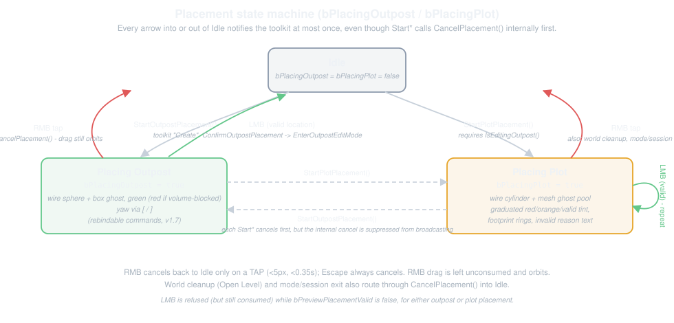
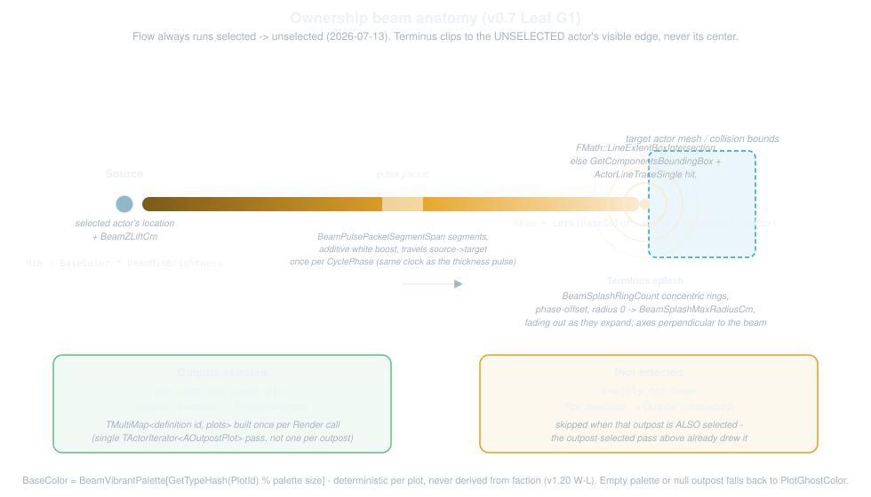

The Ed Mode - UEdMode Deep Dive
This page is meant as a quick reference on UOutpostBuilderEdMode, the UEdMode that owns every bit of interactive behavior in this plugin: placement, ghosts, beams, hover feedback, the Overhead camera pilot session, and the input routing that ties it all together.
If you haven't read architecture.html yet, the short version is that the mode is the only thing that touches both the definition assets and the world actors directly. This page is the deep dive on how it does that, frame by frame.
We're not covering the Slate panel here. That's toolkit.html. We're not covering fork-on-stamp or the relative-transform math either. That's prefabs.html.
This page is OutpostBuilderEdMode.h/.cpp plus OutpostBuilderDraw.h/.cpp and OutpostDrawPrimitives.h/.cpp, cover to cover: how the mode is discovered, the placement state machine, cursor tracing, ghosts, ownership beams, the RTS-style selection markers, territory borders (the Outpost Volume boundary draw), hover/labels, DrawHUD, the camera positioning session, LocateOutpostForDefinition, delete routing (ProcessEditDelete), outpost placement's exclusion-volume validation, PIE/SIE gating, and the editing submode's notifications.
The draw/HUD routines (the beams, the selection markers, the hover ring, the outpost labels, the banner layout, the invalid-reason text) live as free functions in namespace OutpostBuilder::Draw, over in OutpostBuilderDraw.h/.cpp. Render and DrawHUD stay in the mode as the only two functions that gather mode state for the CANVAS/PDI draws (the selection scan, the placement flags). Everything in OutpostBuilder::Draw takes that state as plain parameters and never reads this.
OutpostBuilder::Draw itself wraps a lower layer, namespace OutpostBuilder::DrawPrimitives (OutpostDrawPrimitives.h/.cpp): the generic PDI/canvas primitives (wire squares, rings, pulsed beams, screen labels) that do the actual drawing. Neither layer reads this or holds a back-reference to the mode, and the primitive layer goes one step further. It carries no Outpost type anywhere in its own signatures, a free-standing vocabulary any future editor tool could reuse.
ComposeBannerBlock(), the mode's OWN state-decision function for the build-mode banner, is not called from DrawHUD at all. The banner is a Slate overlay, and ComposeBannerBlock() (public) is called every frame by the toolkit's SOutpostBuildModeBanner binding. See "DrawHUD: Hints and the Snap Readout" further down.
It's the core of the plugin, so we take our time with all of it.
Tuning the Look Without Recompiling
Every color, size, and timing constant this page talks about below (ghost colors, beam speed, HUD banner padding, the Overhead camera's default pitch, the RMB tap-vs-drag thresholds) is a designer property, split across two surfaces:
- Per-user look knobs live on
UOutpostBuilderUserSettings(OutpostBuilderUserSettings.h, editor module,config = EditorPerProjectUserSettings), shown in Editor Preferences > Outpost Builder, not Project Settings.- These are per-machine authoring preferences: one designer's tuned beam palette or HUD layout never lands in source control or forces itself on a teammate.
- Every ghost/marker/beam/HUD/Overhead-camera/input knob that's purely a LOOK lives here, in categories that mirror this page's own section order (
Debug|*/UI|*/bareCamera/bareInput): Ghosts,Debug|Placement Aids(the plot ghost's live readouts and alignment guides, see "Placement Aids" below), Selection (which also holds the scoped-editing fade's own switch), Hover, Beams,Debug|Territory(see "Territory Borders" below), HUD,UI|BuildingGrid(sizing/anchoring the in-viewport Building Command Grid overlay), Overhead Camera, Input.
- Placement-validity knobs (
PlotRingRadius,PlotGhostRadius, and the per-tagPlotSizeTagHalfSizeCmmap) stay onUOutpostBuilderSettingsAsset's Placement category (the project-shared settings data asset), because they feed placement VALIDITY, not just a look. A per-user divergence there would make the same plot legal on one designer's machine and illegal on another's.
Open either surface and change a knob, and every viewport picks it up on the next draw. No recompile, no editor restart.
Every draw/HUD function on this page takes a const UOutpostBuilderSettingsAsset& Style parameter (kept for signature stability) but reads UOutpostBuilderUserSettings::Get() internally for anything that's a look. Style itself is only read on this page for its placement-validity values. Everywhere else a function receives it, it's unused ((void)Style;) on the style-only paths.
The mode-side reads for BOTH surfaces are never-load resolves: UOutpostBuilderSettingsAsset::Get() is loaded-or-CDO, UOutpostBuilderUserSettings::Get() is a UDeveloperSettings CDO singleton that's always resident. So neither sync-loads on these per-frame paths.
A handful of constants stay internal because they aren't designer-meaningful: tessellation side counts (HoverRingSides, SelectionMarkerSides, BeamSegmentCount, BeamPulsePacketSegmentSpan, BeamSplashRingSides), the cursor trace length, the ghost material's engine asset path and color parameter name, the plot-ring search angle count, and GetPlacementPlotSizeTag() (the size tag new plots are placed at, a one-line function returning OutpostBuilder::PlotSizeTags::GetDefaultTag(), since a gameplay tag can't be a constexpr).
Those live beside the OutpostBuilderSettingsAsset.h include in OutpostBuilderEdMode.cpp (the named namespace OutpostBuilder::EdMode) and OutpostBuilderDraw.cpp (the named namespace OutpostBuilder::Draw::Private) respectively. Editing them is a code change and a recompile. (See "Every Internal Namespace Has a Name" below for why every one of this plugin's internal-linkage namespaces has its own unique name instead of being anonymous.)
Nine further values are fixed rather than exposed, at time of writing: SelectionRimThickness, AlignmentGuideThickness, HUDReadoutTextOffsetY, HUDReasonTextOffsetY, OutOfScopeDesaturation, OutOfScopeOpacity, BeamSplashRingPhaseOffset, and BeamPulsePacketBoost sit beside those tessellation constants in OutpostBuilder::Draw::Private (OutpostBuilderDraw.cpp).
BeamThickness sits in OutpostBuilder::UserSettings (OutpostBuilderUserSettings.h) instead, since both the mode and the draw code read it. A project that wants one of these back as a designer knob adds it as a UPROPERTY.
Two correctness invariants are worth knowing about if you're the one turning a knob:
- Empty-palette guard.
BeamVibrantPalette(the neutral-outpost beam colors) is aTArray<FLinearColor>a designer can empty out entirely.ResolveBeamBaseColorchecksUserStyle.BeamVibrantPalette.Num() == 0before the modulo and falls back toUserStyle.PlotGhostColorinstead of dividing by zero and taking the editor down. - Runtime-derived camera trig. The Overhead camera's default framing derives its cosine/sine from
UserStyle.CameraPitchDegreesevery timeComputeDefaultCameraTransformruns, rather than reading hand-baked trig constants. So changing the (runtime-editable) pitch can never desync from stale trig.
Every Internal Namespace Has a Name
A plugin-wide convention worth knowing before you read any of the code excerpts on this page: every file-local, internal-linkage namespace in the plugin is a NAMED namespace, not a bare namespace { ... }. The names, per file:
OutpostBuilderEdMode.cpp-OutpostBuilder::EdMode::Private(distinct from theOutpostBuilder::EdModeconstants namespace above)OutpostBuilderDraw.cpp-OutpostBuilder::Draw::PrivateOutpostPrefabUtils.cpp-OutpostPrefabUtils::PrivateOutpostStampLibrary.cpp-OutpostBuilder::StampOutpostActorEditingLibrary.cpp-OutpostBuilder::ActorEditing::PrivateOutpostBuilderEditorModule.cpp-OutpostBuilder::EditorModule- The toolkit and widget files each carry their own (
OutpostBuilder::EditingBar,OutpostBuilder::CameraPositioning,OutpostBuilder::OverviewinSOutpostsOverviewPanel.cpp, and so on - seetoolkit.html)
Each name is unique per FILE, by requirement rather than by convention: a named namespace gives its contents external linkage (unlike an anonymous namespace, whose contents get internal linkage automatically, unique per translation unit).
This plugin builds under UE's unity build system, which concatenates multiple .cpp files into one translation unit. So two files that both picked, say, namespace Private would collide under the One Definition Rule the moment they land in the same unity blob. A distinct name per file is what avoids that.
Because a named namespace's contents aren't visible to an enclosing scope automatically the way an anonymous namespace's are, every call site needs either the qualified name or a using namespace ...;.
OutpostBuilderEdMode.cpp adds one file-wide using namespace OutpostBuilder::EdMode::Private; right after the namespace so the rest of the file (nearly every action entry point) doesn't have to qualify every call. The smaller namespaces (OutpostBuilder::Draw::Private, OutpostBuilder::BuildTab) instead add a local using namespace ...; inside just the handful of functions that need them.
Every "internal-linkage" mention on this page refers to one of these named-but-file-private namespaces, not a plain anonymous one.
Discovery and the Enter/Exit Lifecycle
How the Mode Gets Discovered
There is no registration call. UOutpostBuilderEdMode is a UCLASS(Transient) deriving UBaseLegacyWidgetEdMode (a UEdMode). UAssetEditorSubsystem::RegisterEditorModes finds it on its own: on OnAllModuleLoadingPhasesComplete it iterates every non-abstract UEdMode CDO in the process and copies GetModeInfo() out of each one. So the id, name, icon, and visibility the Modes panel shows are filled in by the mode's own CONSTRUCTOR, not by the editor module:
// OutpostBuilder/Source/OutpostBuilderEditor/Mode/OutpostBuilderEdMode.cpp
UOutpostBuilderEdMode::UOutpostBuilderEdMode()
{
Info = FEditorModeInfo(
EM_OutpostBuilderId,
NSLOCTEXT("OutpostBuilder", "OutpostBuilderModeName", "Outpost Builder"),
FSlateIcon(FAppStyle::GetAppStyleSetName(), "LevelEditor.Tabs.Modes"),
/*InVisibility=*/true,
/*InPriorityOrder=*/MAX_int32);
}
MAX_int32 for the priority sorts the mode last in the Modes toolbar, behind the engine's own. UCLASS(Transient) matches UEdModeDefault: a mode instance is per-session state and is never saved.
The trade is worth knowing about. Auto-discovery means there's no RegisterMode to forget. There's also no public UNREGISTER, though: the mode stays listed until the asset-editor subsystem tears down, so unloading the plugin at runtime leaves a dead entry in the Modes panel. That's a cost we're carrying deliberately, since nobody hot-unloads this plugin mid-session in practice.
EM_OutpostBuilderId is a plain static id, defined once alongside the class:
// OutpostBuilder/Source/OutpostBuilderEditor/Mode/OutpostBuilderEdMode.cpp
const FEditorModeID UOutpostBuilderEdMode::EM_OutpostBuilderId(TEXT("EM_OutpostBuilder"));
The editor module's Content Browser context menu (ContentBrowser.AssetContextMenu.OutpostDefinition, covered on architecture.html) activates this same id via GLevelEditorModeTools().ActivateMode() when you pick "Locate Placed Outpost" or "Restore Placed Outpost" from a definition asset, so the mode doesn't only start from the Modes tab.
Enter(): Toolkit, Commands, Realtime Overrides, World Cleanup
Enter() does three things of its own, and each one is there for a reason that isn't obvious from the call alone:
// OutpostBuilder/Source/OutpostBuilderEditor/Mode/OutpostBuilderEdMode.cpp
void UOutpostBuilderEdMode::Enter()
{
// Ahead of Super::Enter() (which builds the toolkit): the palette/details the toolkit builds read
// resolved settings, and this one-shot load is one of the sanctioned pre-warm sites.
UOutpostBuilderSettingsAsset::PreWarm();
Super::Enter();
// A viewport opened later is picked up by HandleLevelViewportClientListChanged instead.
ApplyRealtimeOverrideToNewViewportClients();
if (GEditor)
{
LevelViewportClientListChangedHandle = GEditor->OnLevelViewportClientListChanged().AddUObject(this, &UOutpostBuilderEdMode::HandleLevelViewportClientListChanged);
}
// File > Open Level doesn't deactivate editor modes, and world cleanup never unregisters ownerless
// components - the ghost mesh must be torn down while the dying world's scene is still alive.
WorldCleanupHandle = FWorldDelegates::OnWorldCleanup.AddUObject(this, &UOutpostBuilderEdMode::HandleWorldCleanup);
}
The settings pre-warm runs first: UOutpostBuilderSettingsAsset::Get(), the read behind every Style.* value on this page (the Placement-category validity knobs), deliberately never loads, so mode entry is one of the three sanctioned places that sync-load the configured settings asset once (the others: runtime module startup, and the host's PostEditChangeProperty on a repoint).
It sits AHEAD of Super::Enter() because that base call is what builds the toolkit, and the palette and details views the toolkit constructs read resolved settings.
UOutpostBuilderUserSettings::Get(), the read behind every UserStyle.* value on this page, never needs a pre-warm of its own: it's a UDeveloperSettings CDO, always resident from module load.
The toolkit isn't built here. UEdMode::Enter() owns that sequence: it calls the mode's CreateToolkit() override, Init()s the result against Owner->GetToolkitHost() itself, and then calls BindCommands(). So the mode's own override is a one-liner, and it deliberately does NOT call Init() a second time (doing that would re-run every panel builder and every viewport-overlay add):
// OutpostBuilder/Source/OutpostBuilderEditor/Mode/OutpostBuilderEdMode.cpp
void UOutpostBuilderEdMode::CreateToolkit()
{
Toolkit = MakeShareable(new FOutpostBuilderToolkit(this));
}
toolkit.html covers what Init() does with that host.
Command ownership. CommandList is the toolkit's list. It can't be obtained until the toolkit exists, which is why the assignment lives in the BindCommands() override rather than in Enter(): the base class calls BindCommands() from inside Enter(), right after Init()ing the toolkit, so every MapAction would dereference a null CommandList if the assignment waited for Enter() to resume.
It re-runs on every Enter(), since each Enter builds a new toolkit. BindCommands() also deliberately skips Super::BindCommands(): the base maps FocusViewportToSelection onto the toolkit list, a binding this mode never had, and adding it here would change viewport F behavior as a side effect rather than as a decision. See "Why CommandList is the toolkit's list, not the mode's" below for the full argument.
The other two are worth slowing down on, since they're both answers to "what happens when the world underneath this mode changes while it's still active."
Realtime overrides. The ownership beams pulse with FApp::GetCurrentTime(), which means the viewport needs to redraw every frame while the mode is active, not just on input. AddRealtimeOverride is how you force that.
The wrinkle is that GEditor->GetLevelViewportClients() at Enter() time only sees whatever viewports happen to be open right now. Someone can pop a new floating viewport window later, and that viewport needs the override too, or its beams would just sit frozen.
ApplyRealtimeOverrideToNewViewportClients() is the one function that applies the override, and it's built to be safe to call repeatedly: once from Enter(), and again every time OnLevelViewportClientListChanged fires.
That function also does something you wouldn't think to add until you'd been bitten by it: it prunes stale entries out of its own tracking set before applying anything.
// OutpostBuilder/Source/OutpostBuilderEditor/Mode/OutpostBuilderEdMode.cpp
void UOutpostBuilderEdMode::ApplyRealtimeOverrideToNewViewportClients()
{
if (!GEditor)
{
return;
}
const TArray<FLevelEditorViewportClient*>& LiveClients = GEditor->GetLevelViewportClients();
// Prune entries for clients that no longer exist BEFORE the apply loop: a closed viewport's heap
// address can be reused by a client opened later, and a stale entry at the same address would
// wrongly skip the override for the newcomer (freezing its beam/ghost animation). Pointer values
// are only compared, never dereferenced.
for (TSet<FLevelEditorViewportClient*>::TIterator It(RealtimeOverriddenClients); It; ++It)
{
if (!LiveClients.Contains(*It))
{
It.RemoveCurrent();
}
}
for (FLevelEditorViewportClient* ViewportClient : LiveClients)
{
if (ViewportClient && !RealtimeOverriddenClients.Contains(ViewportClient))
{
ViewportClient->AddRealtimeOverride(true, NSLOCTEXT("OutpostBuilder", "RealtimeOverrideReason", "Outpost Builder"));
RealtimeOverriddenClients.Add(ViewportClient);
}
}
}
That's a genuinely subtle bug this sidesteps. RealtimeOverriddenClients is a TSet<FLevelEditorViewportClient*>, and a closed viewport's heap address can be reused by a brand-new client opened afterward. Without the prune, a stale pointer sitting in the set at that same address would make the newcomer look like it's "already been overridden" and get skipped, leaving its beams frozen for no reason anyone would think to check first.
The prune only ever compares pointer values against GetLevelViewportClients(). It never dereferences a stale one.
World cleanup. The second subscription answers a question that trips up a lot of editor-mode code: what happens to your mode's state when the designer does File > Open Level while it's active?
// OutpostBuilder/Source/OutpostBuilderEditor/Mode/OutpostBuilderEdMode.h
/**
* FWorldDelegates::OnWorldCleanup handler: cancels any active placement session when the mode's
* world is being cleaned up (File > Open Level does NOT deactivate editor modes, and
* UWorld::CleanupWorld never unregisters ownerless components). The ghost mesh part components are
* registered directly to the world, and this mode's UPROPERTY refs keep them alive across the map
* change while their raw WorldPrivate/scene pointers go stale - tearing them down here, while the
* world's scene is still alive, is the only safe window.
*/
void HandleWorldCleanup(UWorld* World, bool bSessionEnded, bool bCleanupResources);
The answer is: nothing, by default. Loading a new level does not exit the mode. It stays active straight through the map switch.
That's fine for most of the mode's state, but the ghost mesh pool (covered in full below) is a set of UStaticMeshComponents registered directly to the OLD world's scene, and the mode's own UPROPERTY() refs (also below) are what keep the garbage collector from reclaiming them out from under it.
The GC keeping them alive doesn't mean they stay USABLE. Their WorldPrivate/scene pointers go stale the moment the world finishes tearing down, so if you wait even one frame past OnWorldCleanup, there's no safe window left to unregister them in:
// OutpostBuilder/Source/OutpostBuilderEditor/Mode/OutpostBuilderEdMode.cpp
void UOutpostBuilderEdMode::HandleWorldCleanup(UWorld* World, bool bSessionEnded, bool bCleanupResources)
{
// Only react to OUR world going away (PIE worlds clean up too, and placement previews live in the
// editor world only). At broadcast time the world's scene is still alive, so unregistering the
// ghost mesh component here is safe; one frame later its raw world/scene pointers dangle.
if (World && World == GetWorld() && (bPlacingOutpost || bPlacingPlot))
{
CancelPlacement();
}
}
CancelPlacement() is the one function that owns tearing the ghost down (DestroyGhostMesh, covered below), so routing world cleanup through it means there's exactly one teardown path to reason about, not two.
Exit(): Unwinding in the Right Order
Exit() unwinds all of this, and the order matters more than it looks like at first glance:
// OutpostBuilder/Source/OutpostBuilderEditor/Mode/OutpostBuilderEdMode.cpp
void UOutpostBuilderEdMode::Exit()
{
CancelOverheadCameraPositioning();
if (GEditor)
{
GEditor->OnLevelViewportClientListChanged().Remove(LevelViewportClientListChangedHandle);
}
LevelViewportClientListChangedHandle.Reset();
FWorldDelegates::OnWorldCleanup.Remove(WorldCleanupHandle);
WorldCleanupHandle.Reset();
if (GEditor)
{
for (FLevelEditorViewportClient* ViewportClient : GEditor->GetLevelViewportClients())
{
if (ViewportClient && RealtimeOverriddenClients.Contains(ViewportClient))
{
ViewportClient->RemoveRealtimeOverride(NSLOCTEXT("OutpostBuilder", "RealtimeOverrideReason", "Outpost Builder"), /*bCheckMissingOverride=*/false);
}
}
}
RealtimeOverriddenClients.Reset();
// Before Super::Exit(): CancelPlacement() needs GetWorld(), which Super::Exit() stops serving.
CancelPlacement();
ExitOutpostEditMode();
// No CloseToolkit/Toolkit.Reset() here: FEditorModeTools::DeactivateModeAtIndex already closed it via
// FToolkitManager, and Super::Exit() below resets the Toolkit pointer itself.
CommandList.Reset();
// The recycled mode's palette rebuilds with nothing selected - clear this too, or the next plot
// placed would silently take the building from before this session.
PreviewBuildingDefinitionId = FPrimaryAssetId();
Super::Exit();
}
Every piece unwinds in roughly the reverse of the order it was set up in Enter(), which is the easiest order to audit when you're adding one more thing to this list later:
- The camera positioning session cancels first, since it owns the toolkit's Cancel/Done buttons and needs the toolkit alive to have ever shown them (also see
toolkit.html's note on the viewport overlay's own dtor-time cleanup). - The delegate handles come down next.
- Then the realtime overrides, only from clients this mode actually recorded.
- Then placement, then the editing submode.
- Then the command-list reference
BindCommands()took from the toolkit, then the stale palette selection. Super::Exit()runs last.
Two things about that tail are specific to the UEdMode platform and easy to get wrong. CancelPlacement() has to run BEFORE the base call, because it needs GetWorld(). On a UEdMode that resolves through the tools contexts Super::Exit() destroys.
And there's deliberately no CloseToolkit/Toolkit.Reset() pair: FEditorModeTools::DeactivateModeAtIndex already closed the toolkit through FToolkitManager before it ever called Exit(), and Super::Exit() resets the Toolkit pointer itself, so doing either by hand would double-close.
The Placement State Machine
Placement is a small state machine over two booleans, bPlacingOutpost and bPlacingPlot, mutually exclusive by construction. Here's the whole shape.
RMB cancels only on a TAP (an RMB drag still orbits the camera), and Escape cancels unconditionally while placing (the FOutpostBuilderCommands::CancelPlacement command, rebindable in Keyboard Shortcuts).
That same Cancel chord is ALSO live during an Overhead-camera positioning session: its CanExecute is CanCancelPlacementOrPositioning() (IsPlacementActive() || IsPositioningOverheadCamera()) and its Execute is CancelPlacementOrPositioning(), which routes to CancelPlacement() while placing else CancelOverheadCameraPositioning() while positioning. That's Cancel (abandon), never Revert.
In every other state the CanExecute is false, so ProcessCommandBindings returns the key to the editor unconsumed and Esc is never swallowed outside a live session. That's the whole of the scoping, with no global input preprocessor (the RMB tap-cancel is untouched: it lives in the placement-only branch, so RMB keeps flying the camera during positioning):

Starting and Canceling
StartOutpostPlacement() and StartPlotPlacement() share a shape. Each one wraps its body in a BeginPlacementTransition()/EndPlacementTransition() pair, which runs CancelPlacement() internally for mutual exclusion before either function sets its own flag:
// OutpostBuilder/Source/OutpostBuilderEditor/Mode/OutpostBuilderEdMode.cpp
void UOutpostBuilderEdMode::StartOutpostPlacement()
{
if (IsPlayOrSimulateActive())
{
ShowPlayOrSimulateActiveToast();
return;
}
if (IsPositioningOverheadCamera())
{
return;
}
// Exactly-once placement notification (see BeginPlacementTransition's comment).
const FPlacementTransitionSnapshot Transition = BeginPlacementTransition();
bPlacingOutpost = true;
PlacementPreviewRotation = FRotator::ZeroRotator;
// Success path only - both refusals above already returned, so reaching here
// means placement genuinely started.
WarpCursorIntoActiveViewport();
EndPlacementTransition(Transition);
}
IsPlayOrSimulateActive()/ShowPlayOrSimulateActiveToast() at the top is the same shared PIE/SIE refusal every placement, positioning, and volume entry point on this page opens with: StartOverheadCameraPositioning, EditVolumeForEditingOutpost (the toolkit's Edit Outpost Volume, see "Editing (Not Just Adding) the Outpost Volume" below), and both Start*Placement functions here all guard on it, so Play/Simulate running always produces the same toast no matter which button triggered it.
WarpCursorIntoActiveViewport() on the success path centers the mouse in the active viewport so the ghost appears under the cursor immediately instead of wherever it happened to be left.
StartPlotPlacement() follows the same BeginPlacementTransition()/EndPlacementTransition() shape, including the same IsPlayOrSimulateActive() guard and the WarpCursorIntoActiveViewport() call on its own success path. It also does a few things specific to plots:
- Requires
CanAddPlot(), which is justIsEditingOutpost(). - Seeds the ghost at a ring-search location around the editing outpost (
FindPlotSpawnLocation). - Captures the existing plots' footprints for the validity check.
- Calls
RevalidatePlotPreview()immediately against that seeded location, so the first frame isn't one frame of boundary orange before the nextMouseMoveruns. - Builds the mesh ghost up front, so the very first frame doesn't render one frame of the old ghost or none at all.
There is no footprint-radius cache. The candidate radius is rooted on the plot SIZE new plots are placed at, resolved through UOutpostRuntimeSettings::GetPlotSizeFootprintRadiusCm, a never-loading settings read (loaded-or-CDO). So there is nothing to cache and nothing that can go stale. SetPreviewBuildingDefinition does not re-validate: the hot building supplies only the ghost's MESH, and a hot-swap provably cannot change the placement verdict, so swapping it never needs to re-run the boundary check.
CancelPlacement() is the single function every cancellation path funnels through: RMB, BeginPlacementTransition's own internal housekeeping call, world cleanup, and mode/session teardown all end up here.
RMB itself is a TAP detector, not a bare press. InputKey records the press position and time on IE_Pressed but leaves it unconsumed, so the viewport's normal orbit-on-RMB-drag behavior starts exactly as it would outside placement.
IE_Released only calls CancelPlacement() when the cursor moved less than UserStyle.RMBTapMaxMovePx (default 5 px) and the button was held less than UserStyle.RMBTapMaxHoldSeconds (default 0.35 s). Both are per-user UOutpostBuilderUserSettings knobs under the Input category (see "Tuning the Look Without Recompiling" above). A drag-release falls through unconsumed, same as the press did, so the camera keeps whatever orbit it was already doing.
// OutpostBuilder/Source/OutpostBuilderEditor/Mode/OutpostBuilderEdMode.cpp
void UOutpostBuilderEdMode::CancelPlacement()
{
// Placement-notification discipline (see BeginPlacementTransition): a placement was actually
// active only if either flag was set before this call - after this function's body every path
// below leaves both false, so that's exactly the "genuine end transition" case. Captured before
// the resets below run.
const bool bWasPlacing = bPlacingOutpost || bPlacingPlot;
bPlacingOutpost = false;
bPlacingPlot = false;
// ...
DestroyGhostMesh();
// Suppressed when this is the housekeeping call inside BeginPlacementTransition - the Start*
// caller's EndPlacementTransition fires the single net-transition notification once its own
// state settles. (The one read of the single-writer bSuppressPlacementBroadcast contract.)
if (!bSuppressPlacementBroadcast && bWasPlacing)
{
if (FOutpostBuilderToolkit* OutpostToolkit = GetOutpostToolkit())
{
OutpostToolkit->HandlePlacementStateChanged();
}
}
}
Placing for an Existing Definition ("Edit (Place Actor)")
StartOutpostPlacementForDefinition(FPrimaryAssetId DefinitionId) is the entry point behind the toolkit's "Edit (Place Actor)" action: a definition asset with no live placed actor gets that label instead of plain "Edit", and clicking it lands here instead of LocateOutpostForDefinition.
It refuses under Play/Simulate before it ever stashes anything. A definition stashed while refused would leak into the next genuine placement, which is why the guard is repeated here and not left to the StartOutpostPlacement() this delegates to. From there it resolves the id, stashes the asset in PendingPlacementDefinition, and defers to the ordinary StartOutpostPlacement() for the actual state-machine transition:
// OutpostBuilder/Source/OutpostBuilderEditor/Mode/OutpostBuilderEdMode.cpp
void UOutpostBuilderEdMode::StartOutpostPlacementForDefinition(FPrimaryAssetId DefinitionId)
{
// Checked here too (not just inside the StartOutpostPlacement() this delegates to): PendingPlacementDefinition
// must never be set while refused, or a later genuine StartOutpostPlacement() (once Play/Simulate
// stops) would wrongly pick up this stale definition instead of creating a new one.
if (IsPlayOrSimulateActive())
{
ShowPlayOrSimulateActiveToast();
return;
}
UOutpostDefinition* Definition = LoadPrimaryAssetSync<UOutpostDefinition>(DefinitionId);
if (!Definition)
{
ShowPlainNotification(NSLOCTEXT("OutpostBuilder", "PlaceForDefinitionUnresolvedToast", "Could not resolve the outpost definition to place."));
return;
}
PendingPlacementDefinition = Definition;
StartOutpostPlacement();
}
ConfirmOutpostPlacement branches on PendingPlacementDefinition being valid. When it is, it skips the create-new path entirely and calls UOutpostStampLibrary::PlaceDefinitionAt(World, Definition, FTransform(PlacementPreviewRotation, Location)) instead. That's a non-forking spawn that binds the SAME definition id and reattaches its plots/camera from the definition's own records, contrast with the drag-stamp actor factory, which always forks.
PendingPlacementDefinition is cleared on both the success path and the null-guard branch right after it's read, and again unconditionally inside CancelPlacement(), so a cancelled "Edit (Place Actor)" session can never leak its definition into a later Create-new placement.
Both branches share one exit tail, FinishOutpostPlacementConfirm, which calls CancelPlacement() (the single placement-state notification for this confirm) before EnterOutpostEditMode, so the two ways of confirming an outpost placement structurally cannot exit differently.
Both also fold what they spawn into the configured World Outliner folder (OutpostEditorUtils). The place-for-definition branch sweeps the whole re-placed base by the anchor's identity after PlaceDefinitionAt returns, since the runtime module can no more SetFolderPath than SetActorLabel.
The create-new branch folds the fresh outpost right after GetOrCreateOutpostDefinitionForOutpost, the one spawn site whose definition id is assigned inside that call, and the one place the invalid-id fallback (base folder alone, no subfolder) is reachable, when definition creation is refused.
Confirming a Plot: Repeat Placement
Confirming an outpost placement always ends the session. FinishOutpostPlacementConfirm cancels placement and drops straight into editing the new outpost. Confirming a PLOT placement doesn't. ConfirmPlotPlacement spawns the plot, folds it into the outpost's Outliner folder right after setting its definition id, assigns the palette's hot building to it in the same transaction if one is set, selects it, and then deliberately stays in bPlacingPlot instead of calling CancelPlacement():
// OutpostBuilder/Source/OutpostBuilderEditor/Mode/OutpostBuilderEdMode.cpp
// Repeat placement: stay in bPlacingPlot (current rotation preserved) instead of cancelling.
// Re-capture footprints so the just-placed plot counts, and re-validate the still-current ghost
// location against them immediately (otherwise a click without moving the mouse could stack a
// second plot exactly on top of this one before the next MouseMove ran the check).
CaptureExistingPlotFootprints(Outpost);
RevalidatePlotPreview();
UpdateGhostMesh();
This is the RTS-style "keep placing" workflow research/06 argues for: laying out a row of plots is one placement session with N confirms, not N separate Start/Confirm/Cancel round trips, and the current yaw carries over from one plot to the next.
The re-capture-then-revalidate order matters for the exact reason the comment calls out. Without it, a designer who clicks twice without moving the mouse would silently stack two plots on the same spot, since the just-placed plot wouldn't be in ExistingPlotFootprints yet on the immediate re-check.
RMB or Escape still cancels out of the repeated session at any point, same as any other placement.
The Ctrl-Held Remove Tool
Holding Ctrl during plot placement flips the session into a remove-plot tool, the mirror of repeat placement: lay plots down with LMB, hold Ctrl and pick one back up with LMB, release Ctrl and keep laying.
It is a modifier ON the session, not a separate session. The placement state stays live underneath, and RMB tap / Escape cancels the whole session from remove mode exactly as from placing.
Escape needs one deliberate assist for that. ProcessCommandBindings matches chords EXACTLY, so with Ctrl held the bare-Escape CancelPlacement chord reads as Ctrl+Escape and matches nothing. That's the same exactness that keeps Ctrl+1 a viewport bookmark.
InputKey therefore checks "Ctrl + the cancel command's actual chord" itself while placing a plot with Ctrl down, against the command's chords, never a hardcoded Escape, so a rebind still works. RMB tap needs no equivalent, being a raw modifier-blind gesture.
The state is split deliberately across two reads:
- Display is one per-frame cached flag,
bRemoveModifierHeld, recomputed every frame inTickfromIsRemoveModifierDown(FSlateApplication::Get().GetModifierKeys())(the Remove-Mode Modifier knob's one read, Ctrl by default).- Because the mode has no modifier callback of its own, an
InputKey-only press/release pairing misses a Ctrl press that happens before the mode gets focus (and can stick across an alt-tab).FSlateApplicationis readable from the viewport-lessGetPlacementHintText()Slate binding whereViewport->KeyStateis not. - The expression folds in
bPlacingPlotand the PIE gate, so the flag can never be stuck true outside placement and remove mode never even appears during Play/Simulate. One codicil:CancelPlacementalso resets the flag to false, belt-and-braces that cannot disagree withTick's expression, which the next frame would recompute to false anyway. The reset just spares that one-frame gap. - Every display surface reads this one flag and so can never disagree. The mesh ghost hides while the placement plate is REPURPOSED (
UpdateGhostMesh) as the remove target's own flat red plate, sized/rotated to the TARGET PLOT's footprint rather than the placement ghost's, and hidden entirely with no target. - The banner says "Removing Plot" in its own red accent color, the legend and hint bar swap (below), and the mouse cursor changes (
GetCursor, below). Rendersuppresses the placement wire box/forward-line/blocking-pointer while the existing-plot context rings switch to a dim remove-candidate tint (below), andRenderstill keeps drawing them. They are the "here are the plots" map the target's own plate+X reads against.
- Because the mode has no modifier callback of its own, an
- Mutation re-reads the actual key state at click time.
HandlePlacementClickpollsViewport->KeyState(LeftControl/RightControl)exactly as the adjacent Alt-orbit check does, so the destructive click acts on the keys as they are at the instant of the click, never on last frame's cache.- Alt is checked FIRST. Order is load-bearing, or an Alt+Ctrl drag-orbit would delete a plot on press.
- A Ctrl+LMB with no target under the cursor is still consumed. A bare LMB during placement never falls through unconsumed, and Ctrl+LMB is the editor's additive-selection gesture.
Mouse cursor feedback. UEdMode::GetCursor(EMouseCursor::Type& OutCursor) const (Tools/UEdMode.h, default return false) is consulted for level viewports via FEditorViewportClient::GetCursor -> FEditorModeTools::GetCursor, which iterates ActiveScriptableModes and calls each UEdMode's own GetCursor. This mode IS one of them, so the call lands on the override directly, with no wrapper in between (call chain engine-verified against UE 5.8).
The mode's override returns false (untouched default/hit-proxy cursor) in every state EXCEPT while bRemoveModifierHeld is true, where it returns EMouseCursor::Crosshairs when HoveredActor resolves to a removable plot, EMouseCursor::SlashedCircle otherwise.
The target is the editing outpost's plot under the cursor, found by the SAME MouseMove trace that positions the ghost, never a second trace, and stored in HoveredActor, which doubles as the remove target while the flag is up. That's the same "thing under the cursor" role, the same weak-ptr self-healing if the plot dies between frames, and the same reset-in-CancelPlacement bookkeeping.
The two uses can't overlap because UpdateHoverHighlight only runs on the non-placing branch and Tick resets it on every remove-mode edge.
Unlike the idle hover, the remove target deliberately INCLUDES selected plots. ConfirmPlotPlacement leaves the just-placed plot selected, and it must stay removable.
Render does not draw the target through DrawHoverHighlight. That function (and its color parameter) is idle-hover-only. The target instead gets a flat red plate (the placement plate, PlacementPlateComponent, repurposed by UpdateGhostMesh while armed rather than hidden) plus the SAME colorblind X-mark the invalid-placement plate draws, sized/rotated to the target plot's own footprint.
That's one visual language for "red = removal/invalid" reused rather than a second one. A null target draws nothing, and the ghost's NoCollision profile is what keeps the ghost from eating the hit.
One honest limitation, stated against COLLISION rather than mesh resolution: ECC_Visibility hits simple collision, so a plot whose resolved mesh carries no simple collision primitives is invisible to this trace and un-removable by the tool. Selecting the plot (in the viewport or the Plots list) and pressing Del is the escape hatch.
Remove-candidate highlight. Render's existing-plot footprint loop (ExistingPlotFootprints, captured by CaptureExistingPlotFootprints, which already iterates every plot sharing the editing outpost's definition id, for the placement-context rings) branches on bRemoveModifierHeld. Armed, every OTHER plot draws a dim ring in UOutpostBuilderUserSettings::RemoveCandidateRingColor instead of FootprintRingColor.
The currently-hovered target is excluded from that pass, identity-matched via the footprint snapshot's own plot pointer, so its own red plate + X (see above), drawn earlier in the same function, stays undisturbed on top. No second scan. This is the SAME loop, branching on the SAME flag every other display surface here reads.
The click funnels into RemovePlotUnderCursor, PIE-gated independently of the display flag. Removing a plot removes its record, and bPlacingPlot during PIE is reachable since only StartPlotPlacement refuses. A session live when PIE starts stays live.
From there it opens one "Remove Plot" (singular) FScopedTransaction per removal, around the shared per-plot body RemovePlotAndItsRecord. That helper applies the record rule (IsRecordOwnershipUnique → load the plot's definition → RemovePlot(PlotId) → EditorDestroyActor), and this tool is its sole caller.
DeleteSelection keeps its own variant on purpose. Its guard carries the extra co-selected-outpost clause (records survive when the whole base dies, for Restore) that this outpost-untouching path must never gain.
RemovePlotAndItsRecord deselects the plot (GEditor->SelectActor(Plot, /*bInSelected=*/false, /*bNotify=*/true)) BEFORE destroying it, if it happens to be selected. A just-placed plot stays selected by design, unlike the Del path's DeleteSelection, which SelectNones first. Without the deselect, the transform gizmo would linger at the dead actor's location until the next selection change.
The SelectActor call's own ActorSelectionChangeNotify re-entry is a safe no-op. Its click-clear guard requires !IsPlacementActive(), which is false for the whole duration of this call, only reachable while bPlacingPlot. Both callers own an FScopedTransaction, so undo restores the plot AND its selection state together.
The tail mirrors ConfirmPlotPlacement's repeat-placement re-capture for the mirror-image reason: re-capture footprints, re-validate, refresh the ghost, then HandlePlotsChanged(). Without that refresh, the just-removed plot's snapshot footprint would keep blocking placement at that spot after Ctrl is released.
HUD honesty, both surfaces off the same flag. The hint bar's whole composition is replaced: "Removing Plot (Ctrl held) · LMB remove plot under cursor · Release Ctrl to keep placing." "Ctrl"/LMB stay literal gesture prose, since a polled modifier is not an FUICommandInfo and has no chord to read.
The placement overlay's own Cancel button carries the cancel fact directly, so this string omits it (see "The Net-Transition Broadcast Discipline" below).
The legend gains a discovery row ("Hold Ctrl: remove plot") while placing normally. While armed it swaps that row for what LMB now does, and SUPPRESSES two rows that would lie:
- The rotate row. The bracket keys still rotate the hidden ghost.
InputKeymatches that chord EXPLICITLY while Ctrl is held, tolerating Ctrl as the tool modifier, rather than relying only on the ordinary exact-chord dispatch, which would otherwise reject a bracket key while Ctrl is down. It's not worth advertising at an invisible ghost regardless, so the legend row still suppresses, and the chord stays bound/rebindable. - The "1-9: select building" row. With Ctrl held the digits are the EDITOR's chords: Ctrl+1..9 sets viewport bookmarks via the exact-chord fall-through
InputKeydocuments, so the row's keys would silently do something else entirely.
The Ctrl modifier itself is a fixed gesture, NOT rebindable in Keyboard Shortcuts. An FInputChord fires on a key EVENT, and a hold-to-modify gesture needs per-frame STATE. That's the same reason the Alt-orbit check polls KeyState instead of being a command. Both overlaps and the non-rebindability are recorded in contracts.md.
The Net-Transition Broadcast Discipline
FOutpostBuilderToolkit::HandlePlacementStateChanged() exists so the toolkit can add its in-viewport placement overlay (plus the in-viewport Building Command Grid while a plot specifically is being placed) and disable the editing panel's own individual controls in place (see toolkit.html's "Placement Keeps the Editing Panel") the moment placement starts or ends, without also flickering that UI on every internal housekeeping step.
The tricky part: switching from Idle straight into "Placing Outpost," or from "Placing Plot" directly into "Placing Outpost," both go through CancelPlacement() internally first.
Without suppressing that internal call's own notification, that would fire an end-notification immediately followed by a start-notification, and the toolkit would briefly flash the editing panel's controls back to enabled before disabling them again.
The BeginPlacementTransition()/EndPlacementTransition() pair is what prevents that, declared and commented together:
// OutpostBuilder/Source/OutpostBuilderEditor/Mode/OutpostBuilderEdMode.h
/**
* The exactly-once placement-change notification for a kind switch: Begin snapshots the placing flags, then runs the internal housekeeping
* CancelPlacement() with its own notification suppressed; the caller mutates its kind's state and
* finishes with EndPlacementTransition, which compares the snapshot against the settled state and
* fires (at most) one net-transition notification. The snapshot travels BY VALUE - never member
* state - so the pair stays re-entrancy-safe.
*/
struct FPlacementTransitionSnapshot
{
bool bWasPlacingOutpost = false;
bool bWasPlacingPlot = false;
};
FPlacementTransitionSnapshot BeginPlacementTransition();
void EndPlacementTransition(const FPlacementTransitionSnapshot& Snapshot);
/**
* Set by BeginPlacementTransition around its internal CancelPlacement() call, so that housekeeping
* cancel doesn't fire its own placement-state notification - EndPlacementTransition fires the single
* net-transition notification once the caller's state settles. Single-writer Begin-to-Cancel
* contract: CancelPlacement() is the one reader (see its tail comment).
*/
bool bSuppressPlacementBroadcast = false;
EndPlacementTransition is where the notification actually fires, once, only on a genuine transition:
// OutpostBuilder/Source/OutpostBuilderEditor/Mode/OutpostBuilderEdMode.cpp
void UOutpostBuilderEdMode::EndPlacementTransition(const FPlacementTransitionSnapshot& Snapshot)
{
if (Snapshot.bWasPlacingOutpost != bPlacingOutpost || Snapshot.bWasPlacingPlot != bPlacingPlot)
{
if (FOutpostBuilderToolkit* OutpostToolkit = GetOutpostToolkit())
{
OutpostToolkit->HandlePlacementStateChanged();
}
}
}
If you add a third placement kind later, follow this exact shape: BeginPlacementTransition() at the top, mutate your kind's state, EndPlacementTransition(Transition) at the bottom. Anything less and you'll get double notifications or, worse, a state change that never notifies the toolkit at all.
Delete Routing: ProcessEditDelete
The mode also overrides ProcessEditDelete (OutpostBuilderEdMode.cpp:2625), so the native Del key and the outliner's own Delete command don't just fall through to the editor's default while this mode is active.
When the current selection is EXCLUSIVELY AOutpost/AOutpostPlot actors, ProcessEditDelete routes the delete through the mode's mixed-kind CanDeleteSelection()/DeleteSelection() pair, deleting whatever combination of outposts and plots is selected, cascading if an outpost is among them. Any other selection (a mix of outpost actors with something else, or the base's own Overhead camera/AOutpostVolume alone) falls through to the editor's default delete untouched.
This mixed-kind pair is the ONLY interactive delete path a menu or key points at: the Del key and the outliner's Delete command both reach it, and no toolkit button does. The Ctrl-remove tool's RemovePlotUnderCursor (a placement-time modifier, not a toolkit button) is the other, plot-only, removal path.
The pair deliberately has NO Play/Simulate gate. The Del key deletes even during PIE/SIE, unlike the plot-record-mutating RemovePlotUnderCursor, which is gated. See toolkit.html for the toolkit-side delete surface.
Record preservation is enforced independently by each delete call site. A plot deleted alone removes both the actor AND its definition record, only when it's the record's unique owner. Plots deleted TOGETHER with their owning outpost keep their records, so a later Restore still rebuilds the whole base.
AOutpost::Destroyed's cascade (interactive editor delete only, guarded against undo-replay/BP-reinstancing/PIE/teardown/shared-id twins) destroys every plot, Overhead camera, AND every AOutpostVolume sharing the anchor's INSTANCE identity (definition id only as the legacy fallback), all in the same transaction, so one Ctrl+Z restores the lot, regardless of whether the cascade was triggered by the Del key or the outliner.
The definition asset itself is always left on disk regardless of which path deleted the actors.
Cursor to World: Tracing and Grid Snap
MouseMove is where the ghost's location comes from every frame. Outside placement, it reuses the same trace for hover highlighting instead (more on that below) rather than tracing twice:
// OutpostBuilder/Source/OutpostBuilderEditor/Mode/OutpostBuilderEdMode.cpp
bool UOutpostBuilderEdMode::MouseMove(FEditorViewportClient* ViewportClient, FViewport* Viewport, int32 x, int32 y)
{
if (!bPlacingOutpost && !bPlacingPlot)
{
// Outside placement: reuse this same cursor->world trace pattern (never a second trace) to
// track a hover highlight instead.
UpdateHoverHighlight(ViewportClient);
return false;
}
// ...
FViewportCursorLocation Cursor = ViewportClient->GetCursorWorldLocationFromMousePos();
const FVector Origin = Cursor.GetOrigin();
const FVector Direction = Cursor.GetDirection();
bool bFoundLocation = false;
FVector WorldLocation = FVector::ZeroVector;
AOutpostPlot* RemoveTargetPlot = nullptr;
if (UWorld* World = GetWorld())
{
FHitResult Hit;
const FVector TraceEnd = Origin + Direction * OutpostBuilder::EdMode::CursorTraceLength;
if (World->LineTraceSingleByChannel(Hit, Origin, TraceEnd, ECC_Visibility))
{
WorldLocation = Hit.Location;
bFoundLocation = true;
// ...
}
}
// ...
if (!bFoundLocation && !FMath::IsNearlyZero(Direction.Z))
{
const float PlaneZ = (bPlacingPlot && EditingOutpost.IsValid()) ? EditingOutpost->GetActorLocation().Z : 0.f;
const FVector PlaneOrigin(0.f, 0.f, PlaneZ);
const FVector PlaneHit = FMath::LinePlaneIntersection(Origin, Origin + Direction, PlaneOrigin, FVector::UpVector);
// LinePlaneIntersection is on the infinite line - only accept hits in FRONT of the cursor
// ray (looking above the horizon would otherwise place the ghost behind the camera).
if (FVector::DotProduct(PlaneHit - Origin, Direction) > 0.f)
{
WorldLocation = PlaneHit;
bFoundLocation = true;
}
}
if (bFoundLocation)
{
if (GetDefault<ULevelEditorViewportSettings>()->GridEnabled)
{
const float GridSize = GEditor->GetGridSize();
WorldLocation.X = FMath::GridSnap(WorldLocation.X, GridSize);
WorldLocation.Y = FMath::GridSnap(WorldLocation.Y, GridSize);
WorldLocation.Z = FMath::GridSnap(WorldLocation.Z, GridSize);
}
PlacementPreviewLocation = WorldLocation;
bHasValidPreviewLocation = true;
// ...
}
// ...
}
Worth calling out: the plane fallback only accepts a hit in FRONT of the cursor ray. FMath::LinePlaneIntersection works on the infinite line through the cursor, not the ray, so without that dot-product check, looking up above the horizon with nothing under the cursor would place the ghost behind the camera instead of just not placing it at all.
Grid snap itself is plain FMath::GridSnap against GEditor->GetGridSize(), gated on ULevelEditorViewportSettings::GridEnabled. That's the same setting the toolkit's viewport overlay bar reads back (see "DrawHUD: Hints and the Snap Readout" below), so what you see in the hint text is exactly what's driving the trace.
The Ghost System
Wire Ghosts
The base ghost for either placement kind is a plain PDI wireframe, drawn in Render():
// OutpostBuilder/Source/OutpostBuilderEditor/Mode/OutpostBuilderEdMode.cpp
const UOutpostBuilderUserSettings& UserStyle = UOutpostBuilderUserSettings::Get();
if (bPlacingOutpost)
{
// Exclusion-volume check: reddens exactly like the plot ghost does when its own
// validity check fails - see RevalidateOutpostPreview.
const FLinearColor OutpostColor = bPreviewPlacementValid ? UserStyle.OutpostGhostColor : FLinearColor::Red;
// Exclusion-distance footprint square (no sphere).
OutpostBuilder::Draw::DrawFootprintSquare(PDI, PlacementPreviewLocation, FRotator::ZeroRotator, Style.OutpostExclusionDistance, UserStyle.FootprintRingColor, SDPG_World, 0.f);
const FVector BoxCenter = PlacementPreviewLocation + FVector(0.f, 0.f, UserStyle.OutpostGhostBoxHalfSize);
const FBox GhostBox(BoxCenter - FVector(UserStyle.OutpostGhostBoxHalfSize), BoxCenter + FVector(UserStyle.OutpostGhostBoxHalfSize));
DrawWireBox(PDI, GhostBox, OutpostColor, SDPG_Foreground);
}
else if (bPlacingPlot)
{
// ...
if (!bRemoveModifierHeld)
{
// ... the alignment guides draw first, below the ghost's own state ...
// Shared with the mesh ghost material's tint (GetPlotGhostColor) so the wire ghost and the mesh
// ghost never drift apart. The verdict behind that color is read ONCE here and reused for the
// hollow plate's border and the blocked X below, so no draw decides a state of its own.
const EOutpostPlacementFeedback Feedback = GetPlacementFeedback();
const FLinearColor PlotColor = GetPlotGhostColor();
// Footprint-accurate ring: the SAME radius the validity check uses - the footprint of the plot
// SIZE this ghost will be placed at. Never re-derived here. Note the ghost MESH may overflow this
// ring: the ring is the pad the plot claims, not the extent of the building being previewed onto it.
const float GhostFootprintRadius = GetPreviewFootprintRadiusCm();
const FVector BoxCenter = PlacementPreviewLocation + FVector(0.f, 0.f, UserStyle.PlotGhostHalfHeight);
const FBox GhostPrism(BoxCenter - FVector(GhostFootprintRadius, GhostFootprintRadius, UserStyle.PlotGhostHalfHeight), BoxCenter + FVector(GhostFootprintRadius, GhostFootprintRadius, UserStyle.PlotGhostHalfHeight));
DrawWireBox(PDI, GhostPrism, PlotColor, SDPG_Foreground);
// ...
}
}
The tessellation side-count constants stay bare (no UserStyle. prefix): they're internal tessellation constants, not designer knobs at all; UserStyle.OutpostGhostColor/UserStyle.OutpostGhostBoxHalfSize/UserStyle.PlotGhostHalfHeight are all per-user knobs (UOutpostBuilderUserSettings, Debug|Ghosts category, see "Tuning the Look Without Recompiling" above).
SDPG_Foreground is deliberate on all of this. It's what lets the ghost read through solid geometry instead of getting hidden behind it, which matters a lot when you're placing a plot behind a building that's already there.
The outpost ghost carries its own validity state, not just a fixed green. RevalidateOutpostPreview runs on every MouseMove while bPlacingOutpost, calling the same shared helper the drag-stamp actor factory uses for its own hard refusal, OutpostPrefabUtils::FindBlockingExclusionVolume, against every loaded AOutpostVolume within OutpostExclusionDistance (a settings-asset property, default 3000 cm / 30 m) of the candidate location.
Self-exclusion applies: a volume bound to the SAME definition being placed never blocks it (the "Edit (Place Actor)" path, PendingPlacementDefinition), while a brand-new outpost is blocked by every volume.
While blocked, the ghost reddens above, DrawHUD prints "Too close to <volume label>" beside it, and ConfirmOutpostPlacement refuses the LMB confirm outright.
Volumes themselves are amber-tinted AVolume brush actors, spawned via OutpostPrefabUtils::SpawnDefaultOutpostVolume and PIE/SIE-gated like every other entry point on this page. See the next section for the toolkit action that (re-)invokes that spawn, and for the two sizing numbers behind "a default box size."
Editing (Not Just Adding) the Outpost Volume
The toolkit's Edit Outpost Volume button calls CanEditVolume()/EditVolumeForEditingOutpost(), which is create-if-missing. SpawnDefaultOutpostVolume is idempotent per definition id, so a nullptr return from it is ambiguous on purpose: a volume already exists for this outpost, OR there's no definition id yet to bind one to. EditVolumeForEditingOutpost() disambiguates by falling back to a find-only accessor.
The function returns bool, true only on the genuine "a volume was resolved and selected" path, false on every refusal, because the toolkit's click handler needs that success flag to decide whether to launch the volume-editing excursion (below):
// OutpostBuilder/Source/OutpostBuilderEditor/Mode/OutpostBuilderEdMode.cpp
bool UOutpostBuilderEdMode::EditVolumeForEditingOutpost()
{
if (IsPlayOrSimulateActive())
{
ShowPlayOrSimulateActiveToast();
return false;
}
// ...
FScopedTransaction Transaction(NSLOCTEXT("OutpostBuilder", "EditOutpostVolumeTransaction", "Edit Outpost Volume"));
// CREATE-IF-MISSING: SpawnDefaultOutpostVolume is idempotent per definition id, so a nullptr
// return means EITHER "one already exists" (fine - fall through and find it) OR "no definition id
// yet" (a genuine refusal). A nullptr no longer means failure on its own; only finding nothing
// EITHER way does.
AOutpostVolume* Volume = OutpostPrefabUtils::SpawnDefaultOutpostVolume(World, Outpost);
if (!Volume)
{
Volume = FindVolumeForEditingOutpost();
}
if (!Volume)
{
Transaction.Cancel();
ShowPlainNotification(NSLOCTEXT("OutpostBuilder", "EditOutpostVolumeRefusedToast", "This outpost has no definition yet - nothing to edit."));
return false;
}
// SELECT either way - a freshly spawned volume or a pre-existing one - so the designer can
// immediately reshape the brush with the stock BSP volume tools (that's what "edit the bounds" means
// here; this action enters no submode of its own).
GEditor->SelectNone(false, true);
GEditor->SelectActor(Volume, true, true);
return true;
}
FindVolumeForEditingOutpost() is a plain TActorIterator<AOutpostVolume> scan for one bound to the editing outpost's definition id. It's find-only, it never spawns, and it's what the button's tooltip also calls to decide whether to say "Creates a brush volume ... then selects it" or "Selects this outpost's existing volume so you can reshape it."
Either way the mode's own function ends by SELECTING the volume, and that's still ALL it does. It enters no submode of its own and drops no gizmo. Only a genuinely missing definition id still refuses outright, before any of what follows.
The toolkit adds a second half the mode's function knows nothing about. The toolkit's click handler, FOutpostBuilderToolkit::HandleEditOutpostVolumeClicked, reads the returned bool and, only on true, hands off to FOutpostBuilderEditorModule::BeginEditVolumeExcursion(DefinitionId).
That's a module-hosted FOutpostVolumeExcursion (OutpostBuilderVolumeExcursion.h) that activates the engine's own Geometry ("Brush Editing") mode against the just-selected volume, via the SAME FEditorModeTools::ActivateMode entry point the Modes toolbar itself uses to enter it, and mounts a small "Editing Outpost Volume / Done (Esc)" viewport overlay.
On Done or Esc it deactivates Geometry mode, reactivates Outpost Builder, and calls LocateOutpostForDefinition to land the designer back exactly where they left off.
It has to be module-hosted rather than toolkit-hosted. Activating Geometry mode is itself incompatible with this plugin's own mode, so the moment it activates, UOutpostBuilderEdMode::Exit() fires and tears the toolkit (and every viewport overlay it hosts) down with it. Nothing toolkit-owned could survive the switch to host a way back.
So "editing the bounds" is a guided round trip into the engine's stock brush-editing tools and back. See OutpostBuilderVolumeExcursion.h's own class doc for the full mechanics, including the abnormal-teardown paths (a manual mode switch, or the map closing mid-excursion).
The two sizing numbers are settings, not magic numbers. SpawnDefaultOutpostVolume reads two settings properties in the Placement category of the project's UOutpostBuilderSettingsAsset (see reference.html), alongside CreatedDefinitionDirectory/OutpostExclusionDistance: DefaultOutpostVolumeSizeCm (default 3000) and OutpostVolumeBoundsPaddingCm (default 500).
DefaultOutpostVolumeSizeCm is a per-axis FLOOR, not a fixed size. The brush is fitted to the outpost's actual base bounds (every plot's footprint) plus OutpostVolumeBoundsPaddingCm of clearance per side, and only falls back to the floor on an axis where the fitted result would be smaller. So a bare outpost with no plots yet gets exactly a DefaultOutpostVolumeSizeCm cube, while a sprawling base gets a volume that actually contains it.
Neither setting affects an EXISTING volume's brush. That geometry is already baked into the level, and nothing re-fits it after the fact. The designer reshapes it by hand with the stock tools this action selects it for.
The Placement Ghost and the GC Contract
The wire square prism is only the footprint indicator. While placing a plot, if the ghost resolves to one or more parts, the mode also maintains a transient translucent UStaticMeshComponent per part, showing that actual geometry:
// OutpostBuilder/Source/OutpostBuilderEditor/Mode/OutpostBuilderEdMode.cpp
void UOutpostBuilderEdMode::RebuildGhostMesh()
{
DestroyGhostMesh();
UWorld* World = GetWorld();
// ...
// The SAME resolve GetPreviewFootprintRadiusCm measures - that is the entire point of the seam.
const FPreviewGhostSource Source = ResolvePreviewGhostSource();
if (Source.Parts.IsEmpty())
{
return;
}
// ...
GhostMaterial = UMaterialInstanceDynamic::Create(BaseMaterial, GetTransientPackage());
// ...
// One component per part (a mesh-only or empty-tile ghost is the one-identity-part
// case). Every part is repainted with the ghost material: the ghost communicates placement, not
// the actor's authored look - that is the editor-world PLOT preview's job once placed.
for (const FOutpostPreviewMeshPart& Part : Source.Parts)
{
UStaticMeshComponent* PartComponent = NewObject<UStaticMeshComponent>(GetTransientPackage(), NAME_None, RF_Transient);
PartComponent->SetStaticMesh(Part.Mesh);
const int32 NumMaterials = PartComponent->GetNumMaterials();
for (int32 MaterialIndex = 0; MaterialIndex < NumMaterials; ++MaterialIndex)
{
PartComponent->SetMaterial(MaterialIndex, GhostMaterial);
}
PartComponent->SetCollisionProfileName(TEXT("NoCollision"));
PartComponent->SetCastShadow(false);
PartComponent->SetHiddenInGame(true);
PartComponent->RegisterComponentWithWorld(World);
GhostMeshParts.Add(PartComponent);
GhostMeshPartTransforms.Add(Part.ActorRelativeTransform);
}
// ...
UpdateGhostMesh();
}
The ghost's shape and the placed plot's editor preview must never disagree, so both are built from the same source: the hot building's BuildingActorClass template, walked by OutpostPreviewMeshUtils::CollectMeshParts (the native CDO's static-mesh components plus each Blueprint class's SCS nodes, capturing OverrideMaterials).
The editor-world plot mirrors that same collector (AOutpostPlot::RebuildMirroredBuildingParts, see runtime-loadout.html), so ghost and placed plot render the same template by construction. The ghost's parts come from one seam, ResolvePreviewGhostSource():
// OutpostBuilder/Source/OutpostBuilderEditor/Mode/OutpostBuilderEdMode.h
struct FPreviewGhostSource
{
/** The parts the ghost renders (mesh + placement-relative transform each). Empty when nothing resolved: no hot building and no authored empty-plot mesh (or the asset is unset/missing). */
TArray<FOutpostPreviewMeshPart> Parts;
};
FPreviewGhostSource ResolvePreviewGhostSource() const;
It resolves in priority order:
- The hot building's
BuildingActorClasstemplate viaCollectMeshParts, when the class is set and yields at least one static-mesh part. That's the SAME collector the editor-world plot mirrors, so ghost and plot agree by construction. - Else the hot building's
BuildingMeshas a single identity part, for a class-less building or one whose class contributes nothing. - Or, while the palette's Empty tile is hot (an invalid
PreviewBuildingDefinitionId), the settings asset'sEmptyPlotMeshas a single identity part. That's the one plugin-wide empty-plot mesh, and the editor-world plot resolves the same field for its own empty-plot fallback, so ghost and plot agree there too.
BuildingActorClass feeds both the ghost and the placed plot's editor preview, on top of its gameplay-spawn role, the only thing it does in a packaged game.
The struct carries no radius. The ghost's SHAPE and its validation CIRCLE answer two different questions and are sourced separately on purpose: the shape is the building being previewed (one mesh or several parts), the circle is the pad the plot will claim. They are not kept in agreement by a measurement of the shape at all.
The circle is GetPreviewFootprintRadiusCm(), which resolves the same GetPlacementPlotSizeTag() value ConfirmPlotPlacement stamps into the new plot, through the same GetPlotSizeFootprintRadiusCm a placed plot's ring uses. Ghost and placed plot are one circle by construction: same input, same function, same floor.
A consequence worth stating plainly: a building whose parts are bigger than the pad now visibly overflow its ring. That is the honest picture rather than a bug. The ring is what the plot claims, and a building that needs a different pad is exactly what the disabled treatment refuses.
Including the Empty tile here is deliberate rather than incidental: excluding it would re-create a shape/circle disagreement for that one palette selection.
The parts are a real pool: GhostMeshParts (one UStaticMeshComponent per part) plus a parallel GhostMeshPartTransforms (each part's actor-relative template transform, composed onto the placement transform every UpdateGhostMesh). A mesh-only or empty-tile ghost is simply the one-identity-part case of the same pool. There is no second, single-component code path to keep in sync with it.
This is the part that needs its own GC contract. On a UEdMode that contract is just UPROPERTY(). The mode is itself a UObject that FEditorModeTools holds, so the collector traces the ghost pool through the mode instance with no hand-written reporting at all:
// OutpostBuilder/Source/OutpostBuilderEditor/Mode/OutpostBuilderEdMode.h
UPROPERTY()
TArray<TObjectPtr<UStaticMeshComponent>> GhostMeshParts;
/** Parallel to GhostMeshParts; a plain value array, so no UPROPERTY (nothing here for the GC to trace). */
TArray<FTransform> GhostMeshPartTransforms;
UPROPERTY()
TObjectPtr<UMaterialInstanceDynamic> GhostMaterial;
UPROPERTY()
TObjectPtr<UStaticMeshComponent> PlacementPlateComponent; // The SC-style placement plate (see UpdateGhostMesh).
UPROPERTY()
TObjectPtr<UMaterialInstanceDynamic> PlacementPlateMaterial;
The rule to carry forward is simple. Any strong reference this mode holds gets a UPROPERTY() and a TObjectPtr. Anything that isn't a UObject reference (GhostMeshPartTransforms, a plain value array) deliberately doesn't.
PendingPlacementDefinition (the "Edit (Place Actor)" bookkeeping covered below) carries one for the same reason: a placement session lasts several seconds of the designer moving the mouse, nothing else holds a hard ref to that definition, and a collected one would silently fall the confirm through to the create-new path.
PlacementPlateComponent/PlacementPlateMaterial (the placement plate) are built and destroyed in lockstep with GhostMeshParts/GhostMaterial, so they're traced in lockstep with them too.
DestroyGhostMesh() unregisters and destroys every part component, resets GhostMeshParts/GhostMeshPartTransforms, and clears the material, and it's safe to call when there is no ghost.
UpdateGhostMesh() runs every MouseMove, and once right after a rebuild, so the ghost never renders one frame at a stale transform. It sets each part's world transform from its template-relative transform composed onto the current placement transform, toggles visibility with bHasValidPreviewLocation (also hidden while the Ctrl-held remove tool is armed), and pushes the current ghost color into the one shared MID every part reads.
World-Cleanup Teardown
We covered the why above (HandleWorldCleanup), but it's worth restating here since it's the other half of this same pool's lifecycle: those UPROPERTY() refs keep the components ALIVE across a map change, but "alive" and "usable" aren't the same thing once the world's scene is gone.
CancelPlacement(), called from HandleWorldCleanup while the dying world's scene is still valid, is the only safe window to unregister them. One frame later, their raw world/scene pointers are already stale.
Three-State Validity Tint
Plot placement checks the candidate location against every existing plot's footprint on the same outpost. The response is a hard RTS-style flip, not a gradient, and it has three states rather than two. EOutpostPlacementFeedback (OutpostBuilderEdMode.h) names them:
Valid- legal, nothing flagged. A solid plate in Placement Plate Color (Valid).Warn- legal and still clickable, but the Selected Building'sPlotTagQueryisn't satisfied. A HOLLOW plate (border only, no fill) in Placement Plate Color (Warn), plus a line of HUD text.Blocked- the click will not place. A solid plate in Placement Plate Color (Invalid / Remove), plus the X mark and a reason.
The states differ by FILL TREATMENT, not by hue alone. Roughly 99% of colorblind users are red-green, so a green/amber/red signal on its own would carry nothing for them; the X mark already set that precedent and the hollow plate follows it.
GetPlacementFeedback()/GetPlacementWarnReason() are the two reads every placement surface goes through: the plate's color and its fill, the wire prism, the ghost mesh's tint, and the DrawHUD reason line.
Both are plain member reads (return PlacementFeedback; / return PlacementWarnReason;) rather than a live computation, because the verdict is CACHED state, not derived fresh on every call. Render and DrawHUD between them ask for it up to three times in a single frame, and the underlying check (a find-only asset resolve plus a tag-query evaluation) is real work worth doing once rather than three times.
UpdatePlacementFeedback() is where that work actually happens, at two edges. One is the end of RevalidatePlotPreview(): every MouseMove and every other placement-state change re-derives the verdict from what RevalidatePlotPreview just computed.
The other is directly from SetPreviewBuildingDefinition. A palette hot-swap can't change the footprint geometry, so a full RevalidatePlotPreview() is skipped, but it CAN change the Warn verdict, since that depends on the hot building's PlotTagQuery. Blocked is tested first and unconditionally, so a refusal can never soften into a warning:
// OutpostBuilder/Source/OutpostBuilderEditor/Mode/OutpostBuilderEdMode.cpp
void UOutpostBuilderEdMode::UpdatePlacementFeedback()
{
PlacementWarnReason.Reset();
if (!bPreviewPlacementValid)
{
PlacementFeedback = EOutpostPlacementFeedback::Blocked;
return;
}
// Plot placement only: an outpost has no plot tags and no PlotTagQuery to test, so it stays two-state.
if (!bPlacingPlot || !PreviewBuildingDefinitionId.IsValid())
{
PlacementFeedback = EOutpostPlacementFeedback::Valid;
return;
}
// Find-only: a synchronous load here would stall the viewport on the frame a designer is aiming,
// and this runs on every revalidate/hot-swap edge, not just once.
const UOutpostBuildingDefinition* SelectedBuilding = FindLoadedPrimaryAsset<UOutpostBuildingDefinition>(PreviewBuildingDefinitionId);
if (!SelectedBuilding)
{
PlacementFeedback = EOutpostPlacementFeedback::Valid;
return;
}
// The new plot is born untagged (ConfirmPlotPlacement never writes tags), so the pair judged here -
// the selected building against an empty tag container - is exactly what will exist after the click.
if (OutpostEditorUtils::EvaluateBuildingPlotAdvisory(*SelectedBuilding, FGameplayTagContainer::EmptyContainer)
!= OutpostEditorUtils::EBuildingPlotAdvisory::PlotTagMismatch)
{
PlacementFeedback = EOutpostPlacementFeedback::Valid;
return;
}
const FString BuildingName = SelectedBuilding->DisplayName.IsEmpty()
? PreviewBuildingDefinitionId.PrimaryAssetName.ToString()
: SelectedBuilding->DisplayName.ToString();
PlacementWarnReason = FString::Printf(TEXT("Plot tags won't match %s (places anyway)"), *BuildingName);
PlacementFeedback = EOutpostPlacementFeedback::Warn;
}
Four things about that function are worth holding onto:
bPreviewPlacementValidkeeps its exact meaning.UpdatePlacementFeedbackonly READS it and never writes it, andConfirmPlotPlacementstill tests that bool alone. Warn is derived state layered on top, so a warning can never refuse a click.- The rule isn't re-derived here. It's delegated whole to
OutpostEditorUtils::EvaluateBuildingPlotAdvisory, the same composition the Assign row's tooltip, the palette tile's glyph, and the plot list's drift icon all ask (seetoolkit.html's "The Placement Rule Matrix"). - The pair it judges is the pair that will exist.
ConfirmPlotPlacementwrites the plot's size and (when eligible) its building, never tags, so a new plot is born untagged. The advisory therefore runs the Selected Building against an EMPTY tag container, not a guess. - It loads nothing. A selected building whose asset isn't resident reads as
Validrather than stalling a frame, the same silenceResolvePreviewGhostSource's unresolvable case already produces.
Outpost placement never returns Warn. An outpost carries no plot tags and no PlotTagQuery to test, so that ghost stays two-state and Render's outpost branch colors itself from bPreviewPlacementValid directly.
GetPlotGhostColor() is the shared COLOR rule over that verdict, and the single choke point the wire prism, the mesh ghost material, and the flat placement plate all read from:
// OutpostBuilder/Source/OutpostBuilderEditor/Mode/OutpostBuilderEdMode.cpp
const UOutpostBuilderUserSettings& UserStyle = UOutpostBuilderUserSettings::Get();
switch (GetPlacementFeedback())
{
case EOutpostPlacementFeedback::Warn:
return UserStyle.PlacementPlateWarnColor;
case EOutpostPlacementFeedback::Blocked:
return UserStyle.PlacementPlateInvalidColor;
default:
return UserStyle.PlacementPlateValidColor;
}
It reads PlacementPlateValidColor/PlacementPlateWarnColor/PlacementPlateInvalidColor (Debug|Ghosts, defaults (0,1,0,0.35)/(1,0.6,0,0.35)/(1,0,0,0.35)). The amber is a STATUS color, not a faction color, and its own tooltip says so, since factions carry no color in this plugin.
PlotGhostColor is still read elsewhere. OutpostBuilderDraw.cpp's ResolveBeamBaseColor uses it as the ownership beam's null-outpost/empty-palette fallback, an unrelated use, which is why its DisplayName reads Beam Fallback Color.
Color alone can't express hollow, so the fill decision lives with the plate itself, split across the two places that own it.
UpdateGhostMesh sets the plate material's alpha to 0 on a Warn verdict, and Render draws the plate's border in its place through the shared DrawFootprintSquare, at the same half-size the plate is scaled to, so the border and the plate are one square by construction:
// OutpostBuilder/Source/OutpostBuilderEditor/Mode/OutpostBuilderEdMode.cpp (Render)
if (Feedback == EOutpostPlacementFeedback::Warn)
{
// Full alpha on the border alone: the knob's alpha is a FILL knob, and inheriting it here would
// fade the one mark that has to stay legible once the fill is gone.
FLinearColor BorderColor = PlotColor;
BorderColor.A = 1.f;
OutpostBuilder::Draw::DrawFootprintSquare(PDI, PlacementPreviewLocation + FVector(0.f, 0.f, 2.f), FRotator::ZeroRotator,
GhostFootprintRadius, BorderColor, SDPG_World, UserStyle.BeamThickness);
}
One honest limit is worth stating: a Ghost Material Override whose Color parameter ignores its alpha keeps a solid fill. The amber border, the amber wire prism, and the HUD reason still carry the state, so the warning degrades rather than disappearing.
PreviewProximityRatio is distance / (candidate radius + existing radius), the worst case across every footprint in ExistingPlotFootprints: below 1 overlapping, at 1 exactly at the boundary, above 1 clear. RevalidatePlotPreview() recomputes it every MouseMove alongside bPreviewPlacementValid, BlockingPlotLabel, and BlockingPlotLocation. It still GATES bPreviewPlacementValid, only the smooth color gradient from it is gone.
GetPlotGhostColor() is the single choke point the wire square prism, the mesh ghost material, AND the flat placement plate all read from: three consumers, never drifting apart.
The flat placement plate itself is a UStaticMeshComponent/UMaterialInstanceDynamic pair, PlacementPlateComponent/PlacementPlateMaterial, built alongside the ghost mesh parts in RebuildGhostMesh (same session, same lifecycle as DestroyGhostMesh/UpdateGhostMesh), reusing the plugin's ghost-material pipeline.
It uses the engine's basic Plane mesh (/Engine/BasicShapes/Plane.Plane, 1m x 1m), scaled per-frame in UpdateGhostMesh from the plot size's half-size (PlotSizeTagHalfSizeCm via GetPlotSizeFootprintRadiusCm, the SAME number every footprint square uses, divided by PlateMeshBaseSizeCm since the engine Plane is 100 units square).
It sits at the ghost's ground location with a 1cm Z lift (PlatePlacementZLiftCm: coplanar flat ground would z-fight it, the X rides at 2cm), axis-aligned, tinted via its own MID from GetPlotGhostColor(). It's hidden alongside the mesh ghost while the Ctrl-remove tool is armed.
The X-marker colorblind cue: when the candidate spot is invalid, Render draws two PDI lines corner-to-corner of the plate's actual rectangle, not the circular footprint ring, in FLinearColor::Red, right alongside the blocking-plot pointer line. Scoped to PLOT placement only. The OUTPOST placement ghost is the wire box + exclusion ground square.
Footprint Rings and the Invalid-Reason Pointer
While placing a plot, faint squares mark every existing plot's own footprint, so you can see WHY a spot is invalid rather than just that it is. They go through DrawFootprintSquare, the one square-outline helper every bounds indicator shares:
// OutpostBuilder/Source/OutpostBuilderEditor/Mode/OutpostBuilderEdMode.cpp
const UOutpostBuilderUserSettings& UserStyle = UOutpostBuilderUserSettings::Get();
for (const FPlotFootprint& Existing : ExistingPlotFootprints)
{
OutpostBuilder::Draw::DrawFootprintSquare(PDI, Existing.Location, Existing.Plot.IsValid() ? Existing.Plot->GetActorRotation() : FRotator::ZeroRotator, Existing.Radius, UserStyle.FootprintRingColor, SDPG_World, 0.f);
}
// ...
// Blocking-plot pointer: while BLOCKED for proximity, a thin straight line from the ghost to the
// SPECIFIC blocking plot, same PDI style/depth priority as the ownership beams (no pulse).
// Always paired with the "Too close to <label>" DrawHUD reason text - never color alone.
if (Feedback == EOutpostPlacementFeedback::Blocked)
{
if (!bPlotOutsideOutpostBounds)
{
const FVector BeamLift(0.f, 0.f, UserStyle.BeamZLiftCm);
PDI->DrawLine(PlacementPreviewLocation + BeamLift, BlockingPlotLocation + BeamLift, FLinearColor::Red, SDPG_Foreground, UserStyle.BeamThickness);
}
// ... plus the shared X mark across the plate ...
}
Both treatments read the SAME Feedback local GetPlotGhostColor() was resolved from, read once at the top of the branch, so no draw in Render decides a state of its own. FootprintRingColor and BeamZLiftCm/BeamThickness are per-user style knobs (UOutpostBuilderUserSettings, Debug|Ghosts/Debug|Beams), not settings-asset properties.
And the matching text, drawn by the free function OutpostBuilder::Draw::DrawInvalidPlacementReason (OutpostBuilderDraw.cpp) that the mode's DrawHUD calls into for the plot-blocking case, the plot-outside-bounds case, the exclusion-volume case, and the warn-only advisory. It draws ReasonText VERBATIM: callers compose the whole message before calling, so one function serves every reason without knowing which rule produced it.
It still takes a const UOutpostBuilderSettingsAsset& Style parameter for signature stability, but it reads only UOutpostBuilderUserSettings::Get() internally, so Style goes unused ((void)Style;) on this path:
// OutpostBuilder/Source/OutpostBuilderEditor/Mode/OutpostBuilderDraw.cpp
void DrawInvalidPlacementReason(FCanvas* Canvas, const FSceneView* View, UFont* Font, float DPIScale, const FVector& WorldLocation, const FString& ReasonText, const UOutpostBuilderSettingsAsset& Style)
{
// Style retained for signature stability; this function now reads only user-style settings.
(void)Style;
const UOutpostBuilderUserSettings& UserStyle = UOutpostBuilderUserSettings::Get();
// Behind-camera gate (same as the label loop): WorldToPixel mirrors negative-W points instead of
// rejecting them, so a second viewport facing away would draw the text at a bogus mirrored spot.
if (!View || FVector::DotProduct(WorldLocation - View->ViewLocation, View->GetViewDirection()) <= 0.f)
{
return;
}
FVector2D PixelLocation;
if (View->WorldToPixel(WorldLocation, PixelLocation))
{
PixelLocation /= DPIScale; // Physical px -> canvas units.
Canvas->DrawShadowedString(PixelLocation.X, PixelLocation.Y + UserStyle.HUDReasonTextOffsetY, ReasonText, Font, FLinearColor::White);
}
}
Despite the name, it isn't only for refusals. The warn-only advisory draws its own reason through the same function, in the same place on screen and the same neutral white, so it's the caller's WORDING and never this function that says whether a spot is refused.
The warn line reads "Plot tags won't match <building> (places anyway)", terse in the same voice as "Too close to <label>" and "Outside outpost bounds", and it concedes the click still works. A warn that read like a refusal would be worse than no warn at all.
DrawHUD itself just supplies the state: BlockingPlotLabel/bPreviewPlacementValid for the plot case, BlockingVolumeLabel/bPreviewPlacementValid for the exclusion-volume case, both gated on the relevant bPlacingPlot/bPlacingOutpost flag before calling in, and the plot case additionally on !bRemoveModifierHeld: the reason text is suppressed while the Ctrl-remove tool is armed, like the blocking-pointer line it pairs with.
Notice the color is never the only signal here. The validity tint, the footprint rings, the pointer line, and the reason text all pair together. That's a deliberate call-out from the research pass behind this (research/09-viewport-gizmo-research.md), which names color-only state feedback as an anti-pattern outright, with Fallout 4's settlement mode as the canonical example of getting it wrong.
Placement Aids: Live Readouts and Alignment Guides
Two aids ride alongside the plot ghost, and both are PLOT PLACEMENT ONLY. An outpost ghost has no siblings to measure against and no plot size to report, so neither has anything to say about it. Their knobs live together under Debug|Placement Aids in Editor Preferences.
The readouts are three terse lines beside the ghost, drawn by OutpostBuilder::Draw::DrawPlacementReadouts in the same visual register as the reason text above (same canvas, same shadowed small font, same behind-camera gate), stacked on the OPPOSITE side of the ghost so a refusal and its measurements never occupy the same band.
HUDReadoutTextOffsetY defaults to +14 (screen Y grows downward, so the block sits below the ghost) while HUDReasonTextOffsetY defaults to -20. All three numbers are whole centimeters, the unit every placement knob is authored in:
To center <d> cm 2D distance from the owning outpost's center
Size <x> x <y> cm the pad the plot will claim
Gap / Overlap <d> edge-to-edge clearance to the NEAREST sibling plot
The gap line is omitted entirely when there's no sibling, since the outpost's first plot has nothing to be near and "Gap -" would read as a measurement that failed. A NEGATIVE gap is a real overlap and gets the honest word for it.
Two details are worth keeping. First, the draw measures nothing. Every number arrives as a parameter, because the sibling gap is a snapshot RevalidatePlotPreview already maintains over ExistingPlotFootprints, and it must never become a per-frame actor scan on the HUD path.
Second, the gap is computed on a SQUARE basis, per-axis box separation rather than center distance minus radii. Pads are drawn and judged as axis-aligned squares, so a circular figure would read positive for a diagonal neighbor whose square already overlaps, which is the one direction this number must never err:
// OutpostBuilder/Source/OutpostBuilderEditor/Mode/OutpostBuilderEdMode.cpp (RevalidatePlotPreview)
const float CombinedHalfSize = CandidateRadius + Existing.Radius;
const float AxisGapX = static_cast<float>(FMath::Abs(PlacementPreviewLocation.X - Existing.Location.X)) - CombinedHalfSize;
const float AxisGapY = static_cast<float>(FMath::Abs(PlacementPreviewLocation.Y - Existing.Location.Y)) - CombinedHalfSize;
const float EdgeGap = FMath::Max(AxisGapX, AxisGapY);
The readouts' "nearest" is ranked separately from the validity ratio, in that same one pass. The readout wants the smallest edge-to-edge gap, a number a designer can act on. The ratio wants the closest neighbor RELATIVE to that pair's own threshold. They can name different plots, and each is right about its own question.
The readouts stay up on every plot-ghost state, refusals included. The numbers are how you fix a refusal, not a reward for clearing it. They're suppressed in remove mode with the rest of the placement feedback.
The alignment guides are at most two axis-aligned lines, one per axis, recomputed by UpdatePlotAlignmentGuides() on every MouseMove. When the ghost's edge or center lines up with a near sibling's on X or Y, a line is drawn along that axis, spanning both pads so it visibly passes through the ghost and the neighbor it belongs to.
DrawPlacementAlignmentGuide is a pure segment renderer. It reads only the guide color/thickness knobs and makes no decision about whether a guide exists.
The target set is deliberately small, because a dense cloud of snap points is the failure mode this restraint exists to avoid:
- Only siblings within Alignment Guide Search Radius (default 4000 cm) are considered.
- Only LIKE-FOR-LIKE features line up: near edge to near edge, far edge to far edge, center to center. Never a center against an edge, which would be a coincidence rather than an alignment.
- Only the single closest match per axis survives, and strictly-closer wins, so a tie between two neighbors resolves stably instead of flickering with iteration order.
- A sibling carrying a rotated outpost's yaw is SKIPPED. The search compares plain world X/Y coordinates, so a pad that isn't world-aligned has no world-axis edges to line up with, and a guide drawn to it would point at a place its footprint doesn't reach.
- A sibling whose actor has been destroyed since
ExistingPlotFootprintswas captured is SKIPPED too, checked via the footprint's own weak pointer before its features are read. The snapshot can outlive the plot it was taken from (an undo, a Ctrl-remove elsewhere in the same session), and a dead sibling has no rotation or edge worth reading.
Snapping to those guides exists and ships OFF (bSnapToAlignmentGuides). The line alone already answers "am I lined up", and a tool that moves the ghost by itself should be opted into. With it on, the two snaps compose rather than fight, and the call order in MouseMove is what makes that true:
// OutpostBuilder/Source/OutpostBuilderEditor/Mode/OutpostBuilderEdMode.cpp (MouseMove)
if (bPlacingPlot)
{
// AFTER the grid snap above, BEFORE the validity check below - see UpdatePlotAlignmentGuides'
// own doc for why that order is load-bearing: the alignment snap (when enabled) is the last
// thing that can move the ghost, so validity always judges the settled spot the click uses.
UpdatePlotAlignmentGuides();
RevalidatePlotPreview();
}
The editor's grid runs first and keeps every axis with no live guide. An axis WITH one is then pulled at most Alignment Guide Tolerance (default 40 cm) off its grid position, onto the neighbor's line.
Each axis's search reads only that axis's coordinates, so an X snap can't invalidate the Y match, and both guides stay true after both moves. It's translation-only, which fits the axis-aligned placement model: there's no rotate gesture to reconcile.
UpdatePlotAlignmentGuides owns the bShowAlignmentGuides master switch itself rather than leaving it to the draw, since it's the one place that can honor the switch for BOTH the line and the snap. Turning the guides off therefore also turns the snap off, and the ghost can never be pulled onto a line you can't see.
It clears both guides and returns early outside plot placement, in remove mode, or with no ghost spot.
Guides are derived from the ExistingPlotFootprints snapshot, so they die with it: CaptureExistingPlotFootprints clears them, which is every path that changes the sibling set without a mouse move (a confirm, a Ctrl-remove, an undo), and CancelPlacement clears them too. That's what makes "a guide never outlives the plot it pointed at" true rather than mostly true.
Ownership Beams
Selecting an outpost or a plot draws pulsing beams between the two, always flowing from the selected end toward the unselected one. The pulse packet reads as the selected actor delivering to everything it owns, or, for a selected plot, pointing home to its owner.
The line is one constant width, and the gradient FADES TO TRANSPARENT toward the target rather than blending toward white, so the beam dissolves into its arrival. Every beam cycles a 6-color vibrant palette, regardless of the owning outpost's faction.
The terminus splash sits at the target end (the unselected actor), lying flat on the hit surface (the clip's impact normal) and bursting in sync with the packet's arrival.

DrawOwnershipBeams (OutpostBuilder::Draw::DrawOwnershipBeams, taking PDI, World, SelectedOutposts, SelectedPlots, and Style, with no back-reference to the mode) builds one definition-id-to-plots multimap per call (a single TActorIterator<AOutpostPlot> pass, not one scan per selected outpost), then draws a beam for every owned plot of a selected outpost, and a single beam for a selected plot back to its owner.
It never touches a PDI line itself. It resolves each beam's clip points and color, then hands them to OutpostBuilder::DrawPrimitives::DrawPulsedBeam, the primitive layer's one beam-drawing function (more below):
// OutpostBuilder/Source/OutpostBuilderEditor/Mode/OutpostBuilderDraw.cpp
void DrawOwnershipBeams(FPrimitiveDrawInterface* PDI, UWorld* World, const TArray<AOutpost*>& SelectedOutposts, const TArray<AOutpostPlot*>& SelectedPlots, const UOutpostBuilderSettingsAsset& Style)
{
if (!PDI || !World || (SelectedOutposts.Num() == 0 && SelectedPlots.Num() == 0))
{
return;
}
using namespace OutpostBuilder::Draw::Private;
using namespace OutpostBuilder::DrawPrimitives;
const UOutpostBuilderUserSettings& UserStyle = UOutpostBuilderUserSettings::Get();
if (!UserStyle.bShowOwnershipBeams)
{
return;
}
// Fmod in double before narrowing to float: the ever-growing angle loses enough precision
// after hours of editor uptime to make the pulse animation turn steppy otherwise.
const double PulseAngle = FApp::GetCurrentTime() * UserStyle.BeamPulseSpeed;
const float CyclePhase = static_cast<float>(FMath::Fmod(PulseAngle, 2.0 * UE_DOUBLE_PI) / (2.0 * UE_DOUBLE_PI));
const FVector BeamLift(0.f, 0.f, UserStyle.BeamZLiftCm);
// One FDrawBeamStyle per call, built once, reused for every beam this frame: tessellation
// constants and the two fixed style values sit beside the designer-editable ones off UserStyle.
FDrawBeamStyle BeamStyle;
BeamStyle.SegmentCount = BeamSegmentCount;
BeamStyle.PulsePacketSegmentSpan = BeamPulsePacketSegmentSpan;
BeamStyle.SplashRingSides = BeamSplashRingSides;
BeamStyle.MinBrightness = UserStyle.BeamMinBrightness;
BeamStyle.PulsePacketBoost = BeamPulsePacketBoost;
BeamStyle.Thickness = OutpostBuilder::UserSettings::BeamThickness;
BeamStyle.SplashRingCount = UserStyle.BeamSplashRingCount;
BeamStyle.SplashMaxRadiusCm = UserStyle.BeamSplashMaxRadiusCm;
BeamStyle.SplashRingPhaseOffset = BeamSplashRingPhaseOffset;
// Selected outposts: one beam FROM the outpost (selected) TO each of its plots (unselected) -
// flow runs toward the unselected end, and the splash lands on the unselected actor. Single
// TActorIterator<AOutpostPlot> pass, bucketed BOTH ways: by instance id, and by definition id
// for un-migrated plots that have none.
if (SelectedOutposts.Num() > 0)
{
TMultiMap<FOutpostInstanceId, AOutpostPlot*> PlotsByInstanceId;
TMultiMap<FPrimaryAssetId, AOutpostPlot*> PlotsByDefinitionId;
for (TActorIterator<AOutpostPlot> It(World); It; ++It)
{
AOutpostPlot* Plot = *It;
// ...
const FOutpostInstanceId PlotInstanceId = Plot->GetOutpostInstanceId();
if (PlotInstanceId.IsValid())
{
PlotsByInstanceId.Add(PlotInstanceId, Plot);
continue;
}
const FPrimaryAssetId PlotDefinitionId = Plot->GetOutpostDefinitionId();
if (PlotDefinitionId.IsValid())
{
PlotsByDefinitionId.Add(PlotDefinitionId, Plot);
}
}
TArray<AOutpostPlot*> OwnedPlots;
for (AOutpost* Outpost : SelectedOutposts)
{
// ...
const FVector SourceAnchor = Outpost->GetActorLocation() + BeamLift;
OwnedPlots.Reset();
PlotsByDefinitionId.MultiFind(DefinitionId, OwnedPlots);
for (AOutpostPlot* Plot : OwnedPlots)
{
// ...
// Per-beam BaseColor: every outpost cycles the vibrant palette per PLOT, so this must be
// resolved inside the plot loop, not once per outpost.
const FLinearColor BaseColor = ResolveBeamBaseColor(Outpost, Plot, Style);
const FVector TargetAnchor = Plot->GetActorLocation() + BeamLift;
FVector TargetNormal = FVector::UpVector;
const FVector ClippedTarget = ResolveBeamTargetClipPoint(SourceAnchor, Plot, TargetAnchor, TargetNormal);
// Clip the SOURCE end too, mirroring the target clip above with the
// actor roles swapped, so the beam rises off the outpost's visible surface instead of its
// pivot (the splash lives at the clipped TARGET end - see DrawPulsedBeam).
FVector UnusedSourceNormal;
const FVector ClippedSource = ResolveBeamTargetClipPoint(ClippedTarget, Outpost, SourceAnchor, UnusedSourceNormal);
DrawPulsedBeam(PDI, ClippedSource, ClippedTarget, TargetNormal, BaseColor, CyclePhase, BeamStyle);
}
}
}
// Selected plots: exactly one beam, FROM the plot (selected) TO the owning outpost (unselected) -
// same toward-the-unselected flow as the outpost pass above; skipped when that outpost is
// selected (its own pass above already drew the beam).
for (AOutpostPlot* Plot : SelectedPlots)
{
// ...
// Identity-first: the plot's instance id resolves its own anchor, with the definition-keyed
// lookup only as the fallback for content that predates instance ids. Definition-first was a
// real defect under a shared template - every placement's plots beamed to whichever anchor
// the world scan happened to reach first.
AOutpost* OwningOutpost = FindOwningOutpostForIdentity(World, *Plot);
// ...
DrawPulsedBeam(PDI, ClippedSource, ClippedTarget, TargetNormal, BaseColor, CyclePhase, BeamStyle);
}
}
CyclePhase comes from one time source (FApp::GetCurrentTime()), so the traveling gradient packet and the splash rings never drift out of sync with each other.
Note the Fmod happens in double before narrowing to float. Narrowing PulseAngle to float first, then taking the fraction, loses enough precision after several hours of editor uptime that the packet and splash visibly start to step instead of glide. Keeping the modulo in double precision as long as possible is what avoids that.
FDrawBeamStyle is the one parameter object that carries everything the primitive layer needs to draw a beam, so DrawOwnershipBeams never has to pass eight separate arguments.
Tessellation constants (BeamSegmentCount, BeamPulsePacketSegmentSpan, BeamSplashRingSides) and the two fixed style values (BeamPulsePacketBoost, BeamSplashRingPhaseOffset, both OutpostBuilder::Draw::Private constants at time of writing) sit alongside the designer-editable knobs read off UserStyle (BeamMinBrightness, BeamSplashRingCount, BeamSplashMaxRadiusCm) and the one knob shared with the mode, OutpostBuilder::UserSettings::BeamThickness.
Clipping to the target's visible edge is a trace first, a bounding-box fallback second, since plot preview meshes are NoCollision and never produce a hit:
// OutpostBuilder/Source/OutpostBuilderEditor/Mode/OutpostBuilderDraw.cpp
// File-local: DrawOwnershipBeams is its only caller.
FVector ResolveBeamTargetClipPoint(const FVector& SourcePoint, AActor* TargetActor, const FVector& TargetAnchorPoint, FVector& OutSurfaceNormal)
{
// Unclipped fallback normal: face the beam back the way it came, so a splash drawn with it
// still reads sensibly even when no geometry was hit.
OutSurfaceNormal = (SourcePoint - TargetAnchorPoint).GetSafeNormal(UE_KINDA_SMALL_NUMBER, FVector::UpVector);
if (!TargetActor)
{
return TargetAnchorPoint;
}
// One trace per beam per frame (perf budget) against the target's real collision.
FHitResult Hit;
if (TargetActor->ActorLineTraceSingle(Hit, SourcePoint, TargetAnchorPoint, ECC_Visibility, FCollisionQueryParams::DefaultQueryParam))
{
OutSurfaceNormal = Hit.ImpactNormal;
return Hit.Location;
}
// Plot preview meshes are NoCollision and never produce a hit above - fall back to the visible mesh
// bounds instead (bNonColliding=true so those components still contribute).
const FBox Bounds = TargetActor->GetComponentsBoundingBox(/*bNonColliding=*/true);
if (!Bounds.IsValid)
{
return TargetAnchorPoint;
}
FVector HitLocation = TargetAnchorPoint;
FVector HitNormal = FVector::UpVector;
float HitTime = 0.f;
if (FMath::LineExtentBoxIntersection(Bounds, SourcePoint, TargetAnchorPoint, FVector::ZeroVector, HitLocation, HitNormal, HitTime))
{
OutSurfaceNormal = HitNormal; // The box face the beam enters through.
return HitLocation;
}
return TargetAnchorPoint;
}
The OutSurfaceNormal out-parameter is the surface normal AT whichever clip point won (the trace's ImpactNormal, the box face the beam enters through, or the reversed beam direction as the unclipped fallback), and it's what lets the arrival splash lie flat on the geometry it hits (DrawPulsedBeam takes it as TargetSurfaceNormal).
At most one trace per beam per frame is the perf budget, and the fixed 24-segment beam (BeamSegmentCount, capped at 32 by that same budget) is what makes the gradient and the traveling packet affordable to draw every frame for every selected actor's beams.
The gradient, the packet, and the splash all live in OutpostBuilder::DrawPrimitives::DrawPulsedBeam, over in OutpostDrawPrimitives.cpp. It's the one function in the plugin that actually draws a beam: everything above resolves clip points, color, and the FDrawBeamStyle struct, then hands them off here. Like the rest of OutpostBuilder::DrawPrimitives, it carries no Outpost type in its signature:
// OutpostBuilder/Source/OutpostBuilderEditor/Mode/OutpostDrawPrimitives.cpp
void DrawPulsedBeam(FPrimitiveDrawInterface* PDI, const FVector& SourcePoint, const FVector& TargetPoint, const FVector& TargetSurfaceNormal, const FLinearColor& BaseColor, float CyclePhase, const FDrawBeamStyle& BeamStyle)
{
const FVector BeamDelta = TargetPoint - SourcePoint;
const float BeamLength = static_cast<float>(BeamDelta.Size());
if (BeamLength < UE_KINDA_SMALL_NUMBER)
{
return;
}
const FLinearColor DimColor = BaseColor * BeamStyle.MinBrightness;
const float PacketHalfWidthT = (static_cast<float>(BeamStyle.PulsePacketSegmentSpan) * 0.5f) / static_cast<float>(BeamStyle.SegmentCount);
for (int32 SegmentIndex = 0; SegmentIndex < BeamStyle.SegmentCount; ++SegmentIndex)
{
const float SegStartT = static_cast<float>(SegmentIndex) / BeamStyle.SegmentCount;
const float SegEndT = static_cast<float>(SegmentIndex + 1) / BeamStyle.SegmentCount;
const float SegMidT = (SegStartT + SegEndT) * 0.5f;
// BaseColor brightens toward the target while the ALPHA ramps to zero there - the beam
// dissolves into the arrival splash rather than whitening.
FLinearColor SegmentColor = FMath::Lerp(DimColor, BaseColor, SegMidT);
SegmentColor.A = 1.f - SegMidT;
// The traveling packet stays fully opaque and brightness-boosted (never whitened).
const float PacketDistanceT = FMath::Abs(SegMidT - CyclePhase);
const float PacketInfluence = FMath::Clamp(1.f - PacketDistanceT / PacketHalfWidthT, 0.f, 1.f);
if (PacketInfluence > 0.f)
{
SegmentColor = BaseColor * (1.f + BeamStyle.PulsePacketBoost * PacketInfluence);
SegmentColor.A = FMath::Max(1.f - SegMidT, PacketInfluence);
}
const FVector SegStart = FMath::Lerp(SourcePoint, TargetPoint, SegStartT);
const FVector SegEnd = FMath::Lerp(SourcePoint, TargetPoint, SegEndT);
PDI->DrawTranslucentLine(SegStart, SegEnd, SegmentColor, SDPG_Foreground, BeamStyle.Thickness);
}
// Terminus splash: rings lie in the plane of the clip point's SURFACE NORMAL - flat on
// the geometry the packet hits - and burst in sync with the packet's arrival: ring 0's phase
// equals CyclePhase, so its expansion (re)starts exactly at the cycle boundary where the
// packet lands; trailing rings lag by BeamStyle.SplashRingPhaseOffset each.
FVector RingAxisX, RingAxisY;
TargetSurfaceNormal.GetSafeNormal(UE_KINDA_SMALL_NUMBER, FVector::UpVector).FindBestAxisVectors(RingAxisX, RingAxisY);
for (int32 RingIndex = 0; RingIndex < BeamStyle.SplashRingCount; ++RingIndex)
{
const float RingPhase = FMath::Frac(CyclePhase - RingIndex * BeamStyle.SplashRingPhaseOffset + 1.f);
const float RingRadius = BeamStyle.SplashMaxRadiusCm * RingPhase;
const float RingBrightness = 1.f - RingPhase;
FLinearColor RingColor = BaseColor * RingBrightness;
RingColor.A = RingBrightness;
DrawRing(PDI, TargetPoint, RingAxisX, RingAxisY, RingColor, RingRadius, BeamStyle.SplashRingSides, SDPG_Foreground, BeamStyle.Thickness);
}
}
Every value this function reads arrives through BeamStyle or as a plain parameter: none of it touches UOutpostBuilderUserSettings::Get() or the settings asset directly, the primitive-layer purity contract from this page's intro, in practice. DrawRing is the primitive layer's thin wrapper over the engine's DrawCircle.
The splash lands at TargetPoint, the unselected actor's end, where the traveling packet arrives, so the burst reads as delivery rather than departure.
ResolveBeamTargetClipPoint returns the SURFACE NORMAL at the clip (trace impact normal, box-face normal, or reversed-beam fallback), the rings lie in that surface's plane instead of perpendicular to the beam, and ring 0's expansion phase equals CyclePhase so each burst starts exactly when a packet lands. The splash carries the per-beam BaseColor directly.
BaseColor itself is resolved once per beam by ResolveBeamBaseColor. Beams convey ownership direction, never faction, so EVERY beam cycles the vibrant palette. It's another file-local free function in OutpostBuilderDraw.cpp, taking Style as its last argument only for signature stability:
The comment mandate stripped this function's header block, so the rule now lives on the
Beam Color Palette property tooltip in OutpostBuilderUserSettings.h ("beams convey direction,
not faction, so this is deliberately not a faction color"). The body is the statement of record:
// OutpostBuilder/Source/OutpostBuilderEditor/Mode/OutpostBuilderDraw.cpp
FLinearColor ResolveBeamBaseColor(AOutpost* Outpost, AOutpostPlot* Plot, const UOutpostBuilderSettingsAsset& Style)
{
// Style retained for signature stability; this function now reads only user-style settings.
(void)Style;
const UOutpostBuilderUserSettings& UserStyle = UOutpostBuilderUserSettings::Get();
if (!Outpost)
{
return UserStyle.PlotGhostColor;
}
// Empty-palette guard: BeamVibrantPalette is a designer-editable TArray on the user settings and
// can be emptied, which would make the modulo below divide by zero and take the editor down.
// Fall back to the same PlotGhostColor this function already returns for a null Outpost above.
if (UserStyle.BeamVibrantPalette.Num() == 0)
{
return UserStyle.PlotGhostColor;
}
// Cycle BeamVibrantPalette, indexed deterministically per PLOT (GetTypeHash(FGuid) is stable
// across frames and unaffected by selection order, unlike a running per-frame/per-selection counter -
// see this function's header comment) rather than per outpost, since a given outpost's several beams
// (one per owned plot) should each get their own palette color.
const int32 PaletteIndex = Plot ? static_cast<int32>(GetTypeHash(Plot->GetPlotId()) % static_cast<uint32>(UserStyle.BeamVibrantPalette.Num())) : 0;
return UserStyle.BeamVibrantPalette[PaletteIndex];
}
The palette is a designer-editable TArray<FLinearColor> (per-user on UOutpostBuilderUserSettings, Debug|Beams), defaulting to six vibrant colors (cerulean, orange, pink, emerald, cyan, blue) but editable and even emptyable.
The index is GetTypeHash(Plot->GetPlotId()) % UserStyle.BeamVibrantPalette.Num(), not a running counter, specifically so a given plot's beam keeps the same color from frame to frame regardless of selection order. A counter tied to selection order or draw order would make a plot's beam color flicker depending on what else happened to be selected alongside it.
An emptied palette doesn't crash. ResolveBeamBaseColor checks Num() == 0 first and falls back to UserStyle.PlotGhostColor, the same fallback a null Outpost gets.
RTS-Style Selection Markers
Selecting an outpost or a plot draws a crisp rim circle flat on the ground at its base, a distinct, always-on channel from the hover ring (white, unselected-only) and never a recolor of the beams.
It is rim only, no fill. A translucent fill disc reads as overlapping the building geometry, since coplanar translucency wins a less-or-equal depth test against flat-topped meshes, so a fill would z-fight where there is nothing to overlap. DrawSelectionMarkers is a single DrawCircle per selected actor at SDPG_World.
The rim's radius comes from GetActorGeometryRadius, recomputed per call, and the function forks on the actor. An AOutpost measures its ACTUAL geometry, GetComponentsBoundingBox(bNonColliding=true), so its rim auto-recalculates whenever its mesh or scale changes.
An AOutpostPlot does not measure anything. It resolves its own PlotSizeTag through UOutpostRuntimeSettings::GetPlotSizeFootprintRadiusCm. A plot's footprint is its pad, not whatever mesh happens to sit on it.
Plot size is the plugin's one size concept. It's the tag the disabled treatment tests a building's PlotSizeQuery against (via MatchesPlotSize, a query match), and it's the value that survives a stamp. The mesh is a consequence of the assignment, the pad is the plot's own property, mirrored into its record.
The ghost and the placed plot read the same property through the same function, so they agree by construction.
Migration: read this before you upgrade a populated level. Existing plots' rings change from mesh-measured to size-driven. Concretely:
- Rings become uniform. Every plot of a given size draws the same ring, whatever mesh is on it. Since every pre-existing plot deserializes to
Small, that means every plot in an upgraded level drawsSmall's ring (200 cm, the default 400×400 pad's half-size) rather than one sized to its building. - Some plots may newly draw the red overlap rim. The overlap test measures the same radius, so plots whose new rings intersect will report it, including plots that never did before.
- Nothing moves, and nothing is re-validated. Placement validity is snapshotted at
StartPlotPlacement; it is never re-run against already-placed plots. No plot is relocated, resized, unassigned, or deleted by the upgrade.
So the overlap rim here is advisory only: it reports, it never blocks or relocates. If the new rings read wrong for your project, retune PlotSizeTagHalfSizeCm (Plot Size Tags) on the settings asset (no recompile, no building-asset edits) rather than reaching for a deleted per-asset field.
Territory Borders
One naming note before the mechanics, since the vocabulary has two halves. The actor is an Outpost Volume (AOutpostVolume). That's the canonical name for it everywhere on this site: one per outpost, spawned automatically, and the authority on where another outpost may not be placed.
"Territory Borders" is the name of the DRAW that shows an Outpost Volume's boundary, and it's the name the code and the settings category carry (bShowTerritoryBorders, DrawTerritoryBorders, Debug|Territory). So a territory border is what an Outpost Volume looks like, not a second thing.
Render calls one more free function right after DrawSelectionMarkers, and it's the one draw on this page that isn't selection-gated: every AOutpostVolume in the world draws a flat ground rectangle marking its exclusion extent, whether or not anything is selected. The volume is the placement-exclusion authority. This just makes the boundary designers were already colliding with invisibly visible.
// OutpostBuilder/Source/OutpostBuilderEditor/Mode/OutpostBuilderEdMode.cpp
// Id copies here cannot go stale if the editing outpost changes or dies before the draw reads them.
// Both invalid is exactly "nothing is being edited", leaving the idle world unfaded.
const FOutpostInstanceId EditingInstanceId = EditingOutpost.IsValid() ? EditingOutpost->GetOutpostInstanceId() : FOutpostInstanceId();
const FPrimaryAssetId EditingDefinitionId = EditingOutpost.IsValid() ? EditingOutpost->GetOutpostDefinitionId() : FPrimaryAssetId();
OutpostBuilder::Draw::DrawTerritoryBorders(PDI, World, EditingInstanceId, EditingDefinitionId, Style);
DrawTerritoryBorders (OutpostBuilder::Draw::DrawTerritoryBorders, OutpostBuilderDraw.cpp) is all-user-style like DrawInvalidPlacementReason. Style is retained for signature stability and immediately (void)'d, every knob comes from UOutpostBuilderUserSettings::Get(), and the whole draw is gated on its own master switch, bShowTerritoryBorders.
For every loaded AOutpostVolume, it walks GetWorldBounds()'s XY extents and draws the four edges around them at SDPG_World (so terrain occludes the border naturally, the same footprint-ring precedent) and TerritoryBorderThickness:
// OutpostBuilder/Source/OutpostBuilderEditor/Mode/OutpostBuilderDraw.cpp
const double BorderZ = Volume->GetActorLocation().Z + UserStyle.TerritoryBorderZLiftCm;
const FVector BorderCenter(Bounds.GetCenter().X, Bounds.GetCenter().Y, BorderZ);
DrawTranslucentRectangle(PDI, BorderCenter, FVector::ForwardVector, FVector::RightVector, BorderColor,
static_cast<float>(Bounds.Max.X - Bounds.Min.X), static_cast<float>(Bounds.Max.Y - Bounds.Min.Y),
SDPG_World, UserStyle.TerritoryBorderThickness);
Three details worth calling out:
- Actor Z, not bounds-min Z, and no trace. The rectangle is flat at the volume ACTOR's Z plus the
TerritoryBorderZLiftCmlift, deliberately notBounds.Min.Z.SpawnDefaultOutpostVolumecenters the default brush on the outpost's ground point, so the bounds' minimum is typically underground. There's no trace to find the real ground height either, per the same footprint-ring rule that keeps every per-frame draw path off a second scene trace.
- AABB, not silhouette. This is the enclosing rectangle of
GetWorldBounds(), not the brush's actual shape. A reshaped or rotated brush still draws its axis-aligned bounding box. - Translucent lines, not the engine's
DrawRectangle. That helper routes toPDI->DrawLine, andFBatchedElements::AddLineoverwrites the color's alpha with 1 before it batches anything ("Ensure the line isn't masked out. Some legacy code relies on Color.A being ignored"). A border drawn that way is always solid no matter what alpha the caller passed.DrawTranslucentLine(AddTranslucentLine) is the API that keeps it, and it's pure virtual onFPrimitiveDrawInterface, so every PDI a mode can be handed implements it. That's what makesTerritoryBorderColor's own alpha mean anything, and it's what the scope fade below needs.DrawFootprintSquaretakes the same path for the same reason: every color that reaches it carries a deliberate alpha under 1 (FootprintRingColorat 0.25,RemoveCandidateRingColorat 0.6), and on the opaque path all three would have drawn at full strength. A caller that wants a solid line passes alpha 1 and gets one, which is exactly what the hollow warn border does.
Color is a single knob with no per-volume lookup: TerritoryBorderColor (a sky-blue default, distinct from selection green / hover white / invalid red / the footprint rings' faint white), every border, every volume. It never varies by the volume's owning outpost's faction.
The scope fade. A volume outside the outpost being edited is out of scope, and its border draws that same color put through a neutral fade (ApplyOutOfScopeFade, file-local):
// OutpostBuilder/Source/OutpostBuilderEditor/Mode/OutpostBuilderDraw.cpp
bool bOutOfScope = false;
if (EditingInstanceId.IsValid())
{
bOutOfScope = Volume->GetOutpostInstanceId() != EditingInstanceId;
}
else if (EditingDefinitionId.IsValid())
{
bOutOfScope = Volume->GetOutpostDefinitionId() != EditingDefinitionId;
}
if (bOutOfScope)
{
BorderColor = ApplyOutOfScopeFade(BorderColor);
}
Membership is matched by INSTANCE ID when the outpost being edited has one, and by definition id only for content that predates instance ids. Definition-keyed matching alone was a defect once a template could back more than one placement: every sibling's volume read as in-scope, so editing one outpost left every other placement's border undimmed.
Both ids invalid means nothing is being edited, so nothing fades and the idle world draws exactly as it always has. See "The Scoped-Editing Fade" below for the fade itself and its two knobs.
The four knobs live in the Debug|Territory category on UOutpostBuilderUserSettings (see "Tuning the Look Without Recompiling" above): bShowTerritoryBorders (default true, the master switch), TerritoryBorderColor (default (0.25, 0.65, 1.0, 0.9)), TerritoryBorderThickness (default 8.0), TerritoryBorderZLiftCm (default 30).
Perf shape matches the beams: one TActorIterator<AOutpostVolume> pass per frame, and per volume one bounds walk, with no per-volume actor scan, since the color is a fixed knob. Zero per-frame heap allocations.
Hover Highlight and Outpost Labels
Outside placement, MouseMove tracks whatever unselected AOutpost/AOutpostPlot sits under the cursor, reusing its existing trace rather than adding a second one:
// OutpostBuilder/Source/OutpostBuilderEditor/Mode/OutpostBuilderEdMode.cpp
void UOutpostBuilderEdMode::UpdateHoverHighlight(FEditorViewportClient* ViewportClient)
{
// ...
// Never highlight an already-selected actor - selection has its own (beam) feedback channel, and
// stacking a second tint on top of it is the "two shades of one tint" anti-pattern.
if (NewHoveredActor && Owner && Owner->GetSelectedActors() && Owner->GetSelectedActors()->IsSelected(NewHoveredActor))
{
NewHoveredActor = nullptr;
}
// ...
}
DrawHoverHighlight draws a thin ring at the hovered actor's base, in a distinct white-ish channel rather than a shade of the selection-beam colors, matching the same "never color-only, never a shade of an existing channel" discipline the ghost validity tint follows.
The white ring is the entire hover cue. IsSelectionAllowed is overridden so ONLY outpost-family actors (outpost, plot, camera, volume) are selectable while the mode is active. Clicks on other level geometry fall through.
Every loaded outpost also gets a floating label while the mode is active, drawn by OutpostBuilder::Draw::DrawOutpostLabels rather than in Render since it's screen-projected text, not a PDI primitive.
DrawHUD calls in with the world, the (possibly null) editing outpost, and Style (unused on the style values below, the function reads UOutpostBuilderUserSettings::Get() for those instead). The free function does its own TActorIterator<AOutpost> pass:
// OutpostBuilder/Source/OutpostBuilderEditor/Mode/OutpostBuilderDraw.cpp
const UOutpostBuilderUserSettings& UserStyle = UOutpostBuilderUserSettings::Get();
const FVector MarkerTop = Outpost->GetActorLocation() + FVector(0.f, 0.f, UserStyle.OutpostLabelWorldZOffset);
// Behind-camera gate: FSceneView::WorldToPixel (via ScreenToPixel) does NOT reject a
// negative-W point on its own - it mirrors it to still produce SOME pixel location
// (intended for viewport manipulators near the camera) - so this dot-product check against
// the view's forward direction is the actual "in front of the camera" test.
if (FVector::DotProduct(MarkerTop - CameraLocation, CameraForward) <= 0.f)
{
continue;
}
if (FVector::Dist(CameraLocation, MarkerTop) > UserStyle.OutpostLabelMaxDistanceCm)
{
continue;
}
FVector2D PixelLocation;
if (!View->WorldToPixel(MarkerTop, PixelLocation))
{
continue;
}
PixelLocation /= DPIScale; // Physical px -> canvas units.
The behind-camera gate is the part worth remembering if you ever screen-project a world point yourself. WorldToPixel on its own doesn't reject a point behind the camera. It mirrors a negative-W point to still produce SOME pixel coordinate, since that behavior is meant for viewport manipulators sitting close to the camera, not for a world-space label a hundred meters behind it.
Without the explicit dot-product check here, an outpost directly behind the camera would draw its label mirrored onto the screen instead of just not drawing at all.
The distance cull (OutpostLabelMaxDistanceCm, per-user, UI|HUD category) is a separate, simpler concern. It just keeps a large level from turning into a wall of text.
The editing outpost's own label gets the brighter of two colors; every other loaded outpost gets the dimmer one, the same "editing versus everything else" distinction the mode uses elsewhere. That same fork also decides the scope fade below, so the color and the fade can never name different outposts as the one in scope:
// OutpostBuilder/Source/OutpostBuilderEditor/Mode/OutpostBuilderDraw.cpp
const bool bIsEditingTarget = (Outpost == EditingOutpost);
FLinearColor LabelColor = bIsEditingTarget ? UserStyle.OutpostLabelEditingColor : UserStyle.OutpostLabelColor;
if (EditingOutpost && !bIsEditingTarget)
{
LabelColor = ApplyOutOfScopeFade(LabelColor);
}
EditingOutpost is only ever COMPARED here, never dereferenced, so an edit target that died between the mode resolving it and this loop running can't fault. At worst one frame draws unfaded.
The Scoped-Editing Fade
While one outpost is being edited, the plugin's own ambient annotations on every OTHER outpost recede, so the outpost in scope reads first. It's worth being exact about what that does and doesn't touch, because "grey out the other outposts" is the obvious reading and it isn't what happens.
Exactly two draws fade, and they're the two on this page that run over EVERY outpost in the world rather than over something the designer chose: DrawOutpostLabels (other outposts' name labels) and DrawTerritoryBorders (other outposts' volume borders). Nothing else does.
The selection markers, the ownership beams, and the hover ring never fade at any scope, because each of them marks an actor you deliberately selected or are pointing at this instant, and fading that would be answering a question you just asked with a shrug.
No actor, mesh, or material is touched. OutpostBuilderDraw.cpp draws overlays and owns no actor's materials, so "out of scope" is a statement about the plugin's own annotations, not about the level. The buildings look identical either way. If an actor looks different, something else is going on.
The fade itself is one file-local helper, and it's neutral by construction:
// OutpostBuilder/Source/OutpostBuilderEditor/Mode/OutpostBuilderDraw.cpp
FLinearColor ApplyOutOfScopeFade(const FLinearColor& Color)
{
const UOutpostBuilderUserSettings& UserStyle = UOutpostBuilderUserSettings::Get();
if (!UserStyle.bDimOutOfScopeOverlays)
{
return Color;
}
const float Luminance = Color.GetLuminance();
FLinearColor Faded = FMath::Lerp(Color, FLinearColor(Luminance, Luminance, Luminance, Color.A), UserStyle.OutOfScopeDesaturation);
Faded.A = Color.A * UserStyle.OutOfScopeOpacity;
return Faded;
}
It lerps toward the color's OWN luminance rather than substituting a second tint, so no hue is invented and a faded overlay can never read as a faction (factions carry no color in this plugin).
Three knobs drive it, all under Debug|Selection, sharing that category with the selection rim because they answer the rim's question from the other side. The rim marks what IS singled out, these mark everything that isn't.
bDimOutOfScopeOverlays- the master switch, defaulttrue. Shown as Fade Other Outposts' Labels and Borders While Editing.OutOfScopeDesaturation- default0.85. How much color is drained out; 0 keeps the normal color, 1 leaves plain grey.OutOfScopeOpacity- default0.45. How far the faded overlays drop in strength; 1 leaves them as solid as normal, 0 hides them completely.
The opacity half is the one that needed the translucent-line work described under "Territory Borders" above. On a label it always worked (canvas text honors its color's alpha); on a border it did nothing at all until the draw moved off the engine's opaque line path, and only the desaturation showed.
Nothing fades while no outpost is being edited. Both draws take the editing scope as a parameter (an FPrimaryAssetId for the borders, the editing AOutpost* for the labels), and an invalid id or a null pointer is exactly "nothing is being edited". The idle world is therefore untouched, which is the property to check first if you ever change any of this.
DrawHUD: Hints and the Snap Readout
The centered workflow hint isn't composed in DrawHUD at all. It, the toolkit's own in-viewport placement overlay, and its tooltips all read from one shared string, GetPlacementHintText(), so there's exactly one place to edit the wording and no way for the two surfaces to drift apart:
// OutpostBuilder/Source/OutpostBuilderEditor/Mode/OutpostBuilderEdMode.cpp
FText UOutpostBuilderEdMode::GetPlacementHintText() const
{
using namespace OutpostBuilder::EdMode;
if (bPlacingOutpost || bPlacingPlot)
{
// Ctrl-remove mode: the WHOLE composition is replaced, not appended to - the
// hot-building readout and placement prose below describe placement, which
// is not what LMB does right now. "Ctrl"/LMB/RMB stay literal (gesture prose;
// a polled modifier has no chord to read). Reads the same cached flag as the banner legend - the
// two surfaces can never disagree.
//
// The placement overlay's own Cancel button carries the "RMB / Esc" cancel fact directly as a
// chord-style suffix on its face, so this hint text does not repeat it.
if (bPlacingPlot && bRemoveModifierHeld)
{
return FText::FromString(TEXT("Removing Plot (Ctrl held) · LMB remove plot under cursor · Release Ctrl to keep placing"));
}
// Kind + repeat note (bare FString - this HUD text is dynamically composed with live numeric
// values below, so it stays non-localized).
FString Hint = bPlacingPlot ? TEXT("Placing Plot (repeat for more)") : TEXT("Placing Outpost");
// LMB place and the rotation gesture. Bracket key names come from the commands'
// primary chords so a rebind shows here; LMB is gesture prose and stays literal.
const FOutpostBuilderCommands& InputCommands = FOutpostBuilderCommands::Get();
Hint += TEXT(" · LMB place");
// Hot building name, only meaningful while placing a plot with one actually selected.
// Never-loads resolve: the toolkit's placement overlay rebinds this every frame; the toolkit's Hot
// Building details view keeps the asset resident anyway.
if (bPlacingPlot && PreviewBuildingDefinitionId.IsValid())
{
if (UOutpostBuildingDefinition* BuildingDef = FindLoadedPrimaryAsset<UOutpostBuildingDefinition>(PreviewBuildingDefinitionId))
{
// ...
Hint += FString::Printf(TEXT(" · Building: %s"), *BuildingName);
}
}
return FText::FromString(Hint);
}
// Camera positioning has NO hint branch here: this string surfaces SOLELY through
// the placement overlay, mounted only while IsPlacementActive() - false during positioning - so any
// positioning line would never render. The positioning session carries its own overlay instead.
return FText::GetEmpty();
}
Camera positioning has no branch here on purpose: this string only ever reaches the placement overlay (mounted while IsPlacementActive(), false during positioning), so a positioning line would never render. The positioning session carries its own overlay, whose Revert/Cancel/Done buttons and live "Framing: <target>" label (GetOverheadCameraOverlayLabelText) hold the correct Revert-restores/Cancel-abandons model.
DrawHUD doesn't draw the hint string at all. GetPlacementHintText() surfaces ONLY through the toolkit's bottom-of-viewport overlay bar (level-instance style), so the banner, the outpost labels, and the guidance text never fight for the same top band. The string carries no grid/rot-snap readout; GetPlacementYawStepDegrees() still reads RotGridEnabled to size the actual rotation step, but nothing reports it as text.
DrawHUD is a state-GATHERING shell that hands everything off to OutpostBuilder::Draw free functions instead of drawing anything itself. After Super::DrawHUD and the null-canvas/null-font guards, it reads Style, then calls:
OutpostBuilder::Draw::DrawOutpostLabels(View, Canvas, Font, DPIScale, GetWorld(), EditingOutpost.Get(), Style);
// ...
if (bPlacingPlot && !bRemoveModifierHeld && !bPreviewPlacementValid && bPlotOutsideOutpostBounds)
{
OutpostBuilder::Draw::DrawInvalidPlacementReason(Canvas, View, Font, DPIScale, PlacementPreviewLocation, TEXT("Outside outpost bounds"), Style);
}
else if (bPlacingPlot && !bRemoveModifierHeld && !bPreviewPlacementValid && !BlockingPlotLabel.IsEmpty())
{
OutpostBuilder::Draw::DrawInvalidPlacementReason(Canvas, View, Font, DPIScale, PlacementPreviewLocation, FString::Printf(TEXT("Too close to %s"), *BlockingPlotLabel), Style);
}
else if (bPlacingPlot && !bRemoveModifierHeld && bHasValidPreviewLocation)
{
// Gated on bHasValidPreviewLocation here: otherwise a tag-mismatch warn would draw stale text with
// no ghost on screen at all.
if (GetPlacementFeedback() == EOutpostPlacementFeedback::Warn)
{
OutpostBuilder::Draw::DrawInvalidPlacementReason(Canvas, View, Font, DPIScale, PlacementPreviewLocation, GetPlacementWarnReason(), Style);
}
}
if (bPlacingOutpost && !bPreviewPlacementValid && !BlockingVolumeLabel.IsEmpty())
{
OutpostBuilder::Draw::DrawInvalidPlacementReason(Canvas, View, Font, DPIScale, PlacementPreviewLocation, FString::Printf(TEXT("Too close to %s"), *BlockingVolumeLabel), Style);
}
// ... then the placement readouts, on the opposite side of the ghost ...
DrawOutpostLabels owns every loaded outpost's floating label (the behind-camera gate and distance cull covered above).
DrawInvalidPlacementReason draws whatever fully-composed reason string its caller hands it. Each caller composes its own "Too close to <label>"/"Outside outpost bounds"/tag-advisory text, the function itself neither knows nor assumes a "Too close to" wrapping. It's called once for the plot-blocking case, once for the plot-outside-bounds case, once for the warn-only advisory, and once for the exclusion-volume case (see Wire Ghosts above), instead of each caller inlining its own draw.
Every screen projection divides by Canvas->GetDPIScale() so text lands correctly under Windows display scaling.
Only the advisory branch carries an explicit bHasValidPreviewLocation gate, and the asymmetry is deliberate: with no ghost spot, RevalidatePlotPreview leaves the placement VALID, so the two refusals can't fire, while a tag mismatch would happily draw its text at the stale last-known spot under no ghost at all.
The last thing DrawHUD does is DrawPlacementReadouts (see "Placement Aids" above), gated on bPlacingPlot && !bRemoveModifierHeld && bHasValidPreviewLocation and on an editing outpost actually resolving. No editing outpost means no anchor for the distance line, so the whole block is skipped rather than reporting a distance from the world origin.
PLACEMENT BOUNDS RULE: RevalidatePlotPreview() also checks the plot ghost's whole FOOTPRINT against its own outpost's AOutpostVolume world bounds, found by GetOutpostDefinitionId() match, mirroring FindBlockingExclusionVolume's own lookup. The pad square must sit fully inside the volume's XY bounds, tested as the center against the bounds inset by the footprint half-size, which is exactly equivalent to all four corners inside, since both boxes are axis-aligned (placement has no rotation).
A volume smaller than the footprint on either axis has no valid spot inside it at that plot size. A ghost whose footprint crosses those bounds is invalid regardless of the proximity-ratio check, and takes PRIORITY for the reason text above (bPlotOutsideOutpostBounds, cleared alongside BlockingPlotLabel in CancelPlacement).
NO VOLUME FOR THE EDITING OUTPOST = NO RESTRICTION, stated plainly: an outpost that has never had SpawnDefaultOutpostVolume run, or whose volume was hand-deleted, places with no bounds restriction. The lookup simply finds nothing.
The invalid state reuses the SAME red plate/X the proximity rule already draws, both flip off the one shared bPreviewPlacementValid bool. Only the DrawHUD reason text differs.
The build-mode banner is a Slate overlay, not a DrawHUD canvas draw. The mode/Draw seam still holds: a public ComposeBannerBlock() on the mode reads state and returns a composed-strings POD, OutpostBuilder::Banner::FOutpostBannerBlock (OutpostBuilderBannerBlock.h, a Slate-free header), the "POD carries composed strings, never raw mode state" contract (contracts.md "Banner design").
It also carries one SubStateColor per composed frame (see below). The renderer is a Slate widget instead of a FCanvas layout:
- The renderer is
SOutpostBuildModeBanner(SOutpostBuildModeBanner.h/.cpp), a viewport overlay mounted byFOutpostBuilderToolkit::Init()(and torn down unconditionally by its dtor) for the mode's WHOLE session.- Unlike the reactive overlays (the placement overlay, the camera-positioning overlay, the editing viewport bar, and the in-viewport Building Command Grid,
SOutpostBuildingCommandGrid, a grid of hot-building tiles shown while placing a plot specifically), it is never added/removed reactively. "Always up, never fades." - It is deliberately NOT built on the shared
SOutpostViewportOverlayshell. That shell is a bottom-center horizontal[label][action area]bar, and this banner is a top-left vertical text stack with a colored edge stripe, a different shape entirely.
- Unlike the reactive overlays (the placement overlay, the camera-positioning overlay, the editing viewport bar, and the in-viewport Building Command Grid,
- Content-fit size. There is no width cap and no height. Every slot sizes to its own content, nothing carries
AutoWrapText, and the panel's box is whatever its widest row needs, so a long "Editing '...'" outpost name simply makes the banner wider instead of wrapping.- Content stays TOP-ALIGNED (the
SVerticalBox's ownAutoHeightrows), so an emptier state draws a shorter box. - Two fixed numbers survive on purpose:
AccentStripeWidth, which is the stripe's own thickness rather than a panel size, andSSeparator's built-in 16-unit desired length, which puts a floor under the rule rows that nothingComposeBannerBlockproduces comes near.
- Content stays TOP-ALIGNED (the
- Two-column table.
FOutpostBannerBlock::StatusLines/HotkeyLinesareTArray<OutpostBuilder::Banner::FOutpostBannerRow>(a{Key, Description}pair). A compound legend line is composed as TWO separate rows ({"1-9", "select building"},{"0", "none"}) rather than one "·"-joined string.- The widget renders every StatusLines/HotkeyLines row through ONE shared
SGridPanel:MaxStatusLines + MaxHotkeyLinespre-allocated row slots plus one column-spanning rule row between the two groups (fixed-slot, not rebuilt per frame, withMaxStatusLines = 2andMaxHotkeyLines = 5). Each row's Key/Description cells Collapse together whenComposeBannerBlock's array doesn't reach that index this frame. SGridPanelauto-sizes each of its two columns to the widest VISIBLE cell in it, so every row's key and description line up.
- The widget renders every StatusLines/HotkeyLines row through ONE shared
- The masthead. The title is
BoldCondensedat 20 withFSlateFontInfo::LetterSpacingtracking and a black outline, over a hairline rule that draws only when rows sit beneath it. The sub-state under it isMedium14 in the live accent color.- The legend then carries two type roles rather than one: right-aligned
Bold13 keys with their own tracking, againstRegulardescriptions at reduced alpha, with anItalicface for the guidance rows that carry no key at all, and a fainter second rule between the status group and the hotkey group. - Status rows invert that emphasis, since there the value matters more than the label in front of it.
- The legend then carries two type roles rather than one: right-aligned
- Rounded corners come from an
FSlateRoundedBoxBrushmember (white fill, corner radiusOutpostBuilder::Banner::PanelCornerRadius), tinted live bySBorder::BorderBackgroundColorreadingUOutpostBuilderUserSettings::HUDBannerBackingColor.- The panel also carries a hairline outline whose alpha is a FRACTION of that backing alpha, because the engine never tints a brush outline by the border's background color, so hiding the backing has to hide its edge too. The stripe brush rounds its own left corners to match the panel's.
- Every other
HUDBanner*/HUDHotkeyTextColorper-user knob feeds the Slate text/margin/padding (see "Per-User Style Settings" inreference.html).
- Per-state accents.
ComposeBannerBlockpicks one of fourUOutpostBuilderUserSettingscolors (BannerAccentEditingColor/BannerAccentPlacingColor/BannerAccentRemovingColor/BannerAccentPositioningColor) whenever it sets a non-emptySubStateText, and stores it asFOutpostBannerBlock::SubStateColor.- The widget uses that ONE value for BOTH the sub-state text color and a left edge accent stripe (a thin
SImagetinted by the same attribute), so the two visual cues can never disagree about which mode is active. Idle (no sub-state) hides both together.
- The widget uses that ONE value for BOTH the sub-state text color and a left edge accent stripe (a thin
- Idle get-started teaching, plus the way in and out. While no placement/positioning session is in progress,
ComposeBannerBlockadds aDbl-clickrow stating BOTH faces of the viewport edit gesture, per state:"edit the outpost under the cursor"with nothing being edited,"switch outpost, or leave this one"while editing.- That row is the ONLY written record of the gesture. It has no chord in Keyboard Shortcuts and no button to read, so leaving it out would make the way out less discoverable than the way in.
- A get-started step then follows, as a bare informational row (empty key, like the "No building definitions..." row), because the empty first screen IS onboarding.
- Two mutually-exclusive cases: nothing being edited →
"Pick or create an outpost in the panel to begin". Editing an outpost that has zero live plots AND a non-empty palette →"Pick a building (1-9) and click to place", which complements the1-9legend row rather than repeating it, naming the click-to-place step the legend omits. - That second case is gated on
PaletteEntryCount > 0for the same reason the1-9row is. With an empty palette the "No building definitions - use + New Building in the panel" row is the correct sole next step, and telling a designer to press keys that are inert would contradict it. - The worst case
MaxHotkeyLineshas to cover is editing, palette non-empty, no plots yet, and something deletable selected:1-9+0+ double-click + place-a-building + Delete, five rows.
The Overhead Camera Positioning Session
Positioning an outpost's Overhead camera pilots the active viewport directly, with an explicit Confirm/Cancel instead of vanilla Pilot's always-commits behavior. StartOverheadCameraPositioning refuses to start under a handful of conditions, each one guarding against a real failure mode:
// OutpostBuilder/Source/OutpostBuilderEditor/Mode/OutpostBuilderEdMode.cpp
void UOutpostBuilderEdMode::StartOverheadCameraPositioning()
{
if (IsPlayOrSimulateActive())
{
ShowPlayOrSimulateActiveToast();
return;
}
FLevelEditorViewportClient* VP = GCurrentLevelEditingViewportClient;
if (!VP || !CanPositionOverheadCamera())
{
return;
}
// Checked separately from the guard above, with its own toast, rather than silently no-oping in an
// orthographic viewport: the toolkit only checks CanPositionOverheadCamera, so without this a click in
// Top/Side/Front would give zero feedback (no toast, no log, button stayed enabled). This way a
// designer working in an orthographic viewport can tell the click registered and knows why nothing happened.
if (!VP->IsPerspective())
{
// This wording lives in ONE home, FOutpostBuilderToolkit::GetPositionCameraNeedsPerspectiveText,
// shared with the editing bar's Position Camera tooltip (which shows the same reason while the button
// greys out in an orthographic viewport) - the toast and the greyed-out button can't disagree.
ShowPlainNotification(FOutpostBuilderToolkit::GetPositionCameraNeedsPerspectiveText());
return;
}
// Never hijack an existing pilot session: silently replacing another actor lock corrupts the
// engine's per-session pilot undo bookkeeping (CachedPilotTransform belongs to that session).
if (VP->IsAnyActorLocked())
{
return;
}
// ...
// Placement and camera positioning are mutually exclusive in BOTH directions.
CancelPlacement();
// The definition record (when set) is the source of truth the camera actor mirrors.
UOutpostDefinition* Definition = LoadPrimaryAssetSync<UOutpostDefinition>(Outpost->GetOutpostDefinitionId());
// A nullptr result is ambiguous on its own (see FindOverheadCameraForOutpost's comment) - a
// genuinely-ambiguous case must NOT fall into the "no camera yet" spawn branch below, or positioning
// would spawn a THIRD camera sharing the same definition id instead of surfacing the conflict.
bool bAmbiguousCamera = false;
AOverheadCamera* Camera = FindOverheadCameraForOutpost(Outpost, &bAmbiguousCamera);
if (bAmbiguousCamera)
{
ShowPlainNotification(NSLOCTEXT("OutpostBuilder", "AmbiguousOverheadCameraToast", "More than one Overhead camera shares this outpost's definition - resolve the duplicate before positioning."));
return;
}
bCameraSpawnedThisSession = false;
// Snapshot WHICH framing this session edits. This is resolved BEFORE the camera is placed
// because the record chosen here drives all three reads below - the spawn transform, the drift
// reconcile, and the FOV. Resolving it after them would leave the READ side plot-blind
// while the WRITE side in ConfirmOverheadCameraPositioning is not, so re-framing a plot would start from the
// OUTPOST's framing and Done would then overwrite that plot's own saved record with it - a silent loss of
// the framing the designer had already saved.
//
// Snapshotted rather than re-read at Confirm time for the same reason PositioningOutpost is: the
// selection can change (or the plot can be deleted) mid-pilot, and re-reading it there would write to
// whatever happens to be selected when Done is pressed rather than to what was framed here. An
// invalid id (the outpost itself, or nothing resolvable) means this session frames the outpost.
AOutpostPlot* FramingPlot = Cast<AOutpostPlot>(GetCameraFramingTarget());
PositioningPlotId = FramingPlot ? FramingPlot->GetPlotId() : FGuid();
// Snapshot the target's DISPLAY NAME alongside PositioningPlotId, from the SAME resolution, so
// the positioning overlay's label names exactly what Done will write and never drifts to a mid-pilot
// reselection. A framed plot shows its actor label; framing the outpost shows the definition display
// name (actor-label fallback). Read as FText by GetPositioningFramingTargetName; cleared in EndOverheadCameraPilot.
if (FramingPlot)
{
PositioningTargetDisplayName = FramingPlot->GetActorLabel();
}
else
{
PositioningTargetDisplayName = (Definition && !Definition->DisplayName.IsEmpty())
? Definition->DisplayName.ToString()
: Outpost->GetActorLabel();
}
// Both records are OUTPOST-relative (PlotCameras included - see the member's doc comment in
// OutpostDefinition.h), so every ComposeRecordWorldTransform below shares the one basis regardless
// of which branch set this. Null = the target has no saved framing yet.
const FOutpostCameraRecord* SavedRecord = nullptr;
if (Definition)
{
if (PositioningPlotId.IsValid())
{
if (Definition->HasPlotCameraView(PositioningPlotId))
{
SavedRecord = &Definition->GetPlotCameraView(PositioningPlotId);
}
}
else if (Definition->GetOverheadCamera().bIsSet)
{
SavedRecord = &Definition->GetOverheadCamera();
}
}
const bool bHasSavedRecord = SavedRecord != nullptr;
if (!Camera)
{
// ... spawn at SavedRecord's composed world transform, or ComputeDefaultCameraTransform otherwise
bCameraSpawnedThisSession = true;
}
else if (bHasSavedRecord)
{
// Reconcile a drifted actor (undo of the engine pilot transaction, manual moves) back to the
// record for THIS session's framing target - never the outpost's when a plot is framed.
Camera->SetActorTransform(ComposeRecordWorldTransform(SavedRecord->RelativeTransform, *Outpost));
}
// ...
PrePilotCameraTransform = Camera->GetActorTransform();
// Save the designer's own viewport state before we take it over.
SavedViewTransform = VP->GetViewTransform();
SavedFOVAngle = VP->FOVAngle;
// Apply this session's target's saved FOV (or the default) to the camera component before locking.
if (UCameraComponent* CameraComponent = Camera->GetCameraComponent())
{
CameraComponent->FieldOfView = bHasSavedRecord ? SavedRecord->FieldOfView : UOutpostBuilderUserSettings::Get().DefaultOverheadCameraFieldOfView;
}
VP->SetActorLock(Camera);
VP->bLockedCameraView = true;
VP->MoveCameraToLockedActor();
PositioningCamera = Camera;
PositioningOutpost = Outpost;
PositioningViewportClient = VP;
bPositioningOverheadCamera = true;
if (FOutpostBuilderToolkit* OutpostToolkit = GetOutpostToolkit())
{
OutpostToolkit->HandleCameraPositioningChanged();
}
}
Note the extra bookkeeping variable: PositioningOutpost records which outpost the session was STARTED on, separate from EditingOutpost.
That distinction is a documented contract rather than a live divergence. Every path that changes EditingOutpost cancels the session first (EnterOutpostEditMode won't carry a session across outposts, ExitOutpostEditMode kills it unconditionally), so the two agree today. Writing to PositioningOutpost anyway is what keeps that agreement from being load-bearing.
Confirm writes to the outpost the session was STARTED on, never whatever happens to be the current EditingOutpost by the time Done is clicked, so a future path that does let them drift can't silently corrupt a foreign definition.
PositioningPlotId is the same idea, one level down: which RECORD within that outpost's definition the session is framing. There are two record kinds: the outpost's own OverheadCamera, and PlotCameras (keyed by FGuid PlotId).
GetCameraFramingTarget() resolves the CURRENT editor selection to exactly one AOutpost or AOutpostPlot belonging to the editing outpost's definition, or null: nothing selected, a mix of an outpost and a plot, two-or-more of the same kind, or an actor from a different definition entirely.
StartOverheadCameraPositioning reads it exactly once, at session start, and caches the result as PositioningPlotId (an invalid FGuid meaning "the outpost"). So a selection change, or the framed plot's own deletion, mid-pilot can't silently retarget which record ConfirmOverheadCameraPositioning ends up writing.
Naming the framing target on screen. Nothing else on screen names WHAT a session frames, so without this a designer with a plot selected but meaning the outpost's camera (or vice-versa) could fly, press Done, and silently write the wrong FOutpostCameraRecord.
StartOverheadCameraPositioning snapshots the target's display name into PositioningTargetDisplayName (a framed plot's actor label, else the outpost's definition display name, actor-label fallback) alongside PositioningPlotId, from the SAME GetCameraFramingTarget() resolution. So the name can never disagree with the record the write side keys on.
GetPositioningFramingTargetName() exposes it (as FText, empty outside a session), and the toolkit's positioning overlay label binds GetOverheadCameraOverlayLabelText, which renders "Positioning Overhead Camera - Framing: <target>", bottom-center, right beside the Revert/Cancel/Done buttons the designer is about to click.
Snapshotted, not a live selection re-read, for the same reason PositioningPlotId is.
Esc as the universal exit. The Cancel chord is live during positioning too (see "The Placement State Machine" above for the CommandList/CanExecute routing): its Execute fires CancelOverheadCameraPositioning: Cancel/abandon, deliberately NOT Revert (which restores the saved framing and stays a button-only verb).
Restoring the viewport is its own shared helper, since both Confirm and Cancel need the exact same viewport-side teardown, and both need to re-validate that the viewport is still theirs to touch before touching it:
// OutpostBuilder/Source/OutpostBuilderEditor/Mode/OutpostBuilderEdMode.cpp
void UOutpostBuilderEdMode::EndOverheadCameraPilot()
{
FLevelEditorViewportClient* VP = PositioningViewportClient;
// Viewport-restore half: only when the client is still ours to restore (re-validated per the recipe -
// the user may have changed focus mid-pilot).
if (IsViewportClientLockedToCamera(VP, PositioningCamera.Get()))
{
VP->ViewFOV = SavedFOVAngle;
VP->SetActorLock(nullptr);
GEditor->RemovePerspectiveViewRotation(true, true, false);
VP->SetViewLocation(SavedViewTransform.GetLocation());
VP->SetViewRotation(SavedViewTransform.GetRotation());
VP->bLockedCameraView = false;
VP->Invalidate();
// ...
}
// Data/actor half: always runs. PositioningCamera/bCameraSpawnedThisSession are intentionally left
// alone here - Confirm/Cancel still need them after calling this helper, and clear them themselves.
// PositioningPlotId is different: Confirm has already consumed it (above, before calling this) to
// pick which record to write, so it is safe to clear alongside the rest of the session state here.
PositioningViewportClient = nullptr;
bPositioningOverheadCamera = false;
PositioningPlotId.Invalidate();
PositioningTargetDisplayName.Reset(); // Cleared alongside the id (the overlay's Framing label reads it).
}
IsViewportClientLockedToCamera (a file-local helper) is the re-validation: it confirms the saved viewport client is still a live, registered client AND still actually locked to this session's camera before touching any of its view state. If a designer alt-tabbed into a different viewport mid-pilot, that viewport is no longer "ours" to restore, and this skips the viewport-side work entirely while still running the data-side cleanup below it.
ConfirmOverheadCameraPositioning writes the definition record and ends the pilot, to ONE of two records depending on PositioningPlotId:
// OutpostBuilder/Source/OutpostBuilderEditor/Mode/OutpostBuilderEdMode.cpp
// SAME relativization math either way, against the SESSION's outpost (never the current
// EditingOutpost) - PlotCameras values are OUTPOST-relative, not plot-relative (see the
// member's doc comment in OutpostDefinition.h). PositioningPlotId (snapshotted at
// StartOverheadCameraPositioning) decides only WHICH record this write targets.
const FTransform RelativeTransform = MakeRecordRelativeTransform(Camera->GetActorTransform(), *Outpost);
if (PositioningPlotId.IsValid())
{
Definition->SetPlotCameraView(PositioningPlotId, RelativeTransform, FieldOfView);
}
else
{
Definition->SetOverheadCameraView(RelativeTransform, FieldOfView);
}
PlotCameras entries are relative to the OUTPOST's own record basis (the exact same basis OverheadCamera uses), never the plot's own transform (see architecture.html's records-not-nesting section and OutpostDefinition.h's comment on the member itself). That's why the relativization line above reads identically for both branches, only the WRITE TARGET differs.
One consequence worth calling out: moving a PLOT does NOT move its saved PlotCameras entry. Only moving the OUTPOST anchor does, through AOutpost::ReRelativizeOwnedRecords()'s sweep, which covers PlotCameras too, reconstructing each entry's pre-move world transform from the definition's PlacedOutpostTransform since there's no live per-plot camera actor to read it from directly.
This is a known, accepted limitation, not an oversight. See the header comment on PlotCameras for the reasoning.
CancelOverheadCameraPositioning ends the pilot and either destroys the camera (if it was spawned fresh this session) or restores its pre-pilot transform (if an existing camera was reused). Both call the toolkit's HandleCameraPositioningChanged() directly (via GetOutpostToolkit()), but only when a session was genuinely active, the same "only on a real transition" discipline the placement-transition pair follows:
// OutpostBuilder/Source/OutpostBuilderEditor/Toolkit/OutpostBuilderToolkit.h
/**
* Called when the Overhead camera positioning submode starts (StartOverheadCameraPositioning, success path
* only) or ends (Confirm/CancelOverheadCameraPositioning, only when a session was actually active -
* both are also called unconditionally from cleanup paths, which must NOT spuriously notify).
* Adds/removes OverheadCameraOverlayWidget from the active level viewport.
*/
void HandleCameraPositioningChanged();
One more method rounds out the submode's public surface: RevertOverheadCameraToSaved() (the positioning overlay's "Revert" button).
While a session is active, it restores PositioningCamera to the framing TARGET's own LAST SAVED record, the exact same resolution StartOverheadCameraPositioning uses (see above): PositioningPlotId's PlotCameras entry when a plot is being framed, else the outpost's own OverheadCamera.
A target with no saved record yet falls back to ComputeDefaultCameraTransform(Outpost) and the default FOV, the same transform a freshly-spawned camera would have started at, so the button always does something sensible instead of no-oping. If the viewport is still locked to that camera, it also calls MoveCameraToLockedActor() so the view catches up immediately instead of waiting for the next tick.
It never touches the definition record, only Confirm does that, so Revert is purely a "go back to what's saved" for the framing you're piloting, not a write. It follows PositioningPlotId exactly the way the session's own start-of-positioning resolve does, so it restores a plot's own saved framing when a plot is what's being positioned, not just the outpost's default.
GetCameraFramingTarget and the Eager Camera Spawn
Two more small methods complete the contextual-camera picture, both public on the mode:
GetCameraFramingTarget() constis the read-only resolve described above: the editor SELECTION, filtered down to exactly oneAOutpost/AOutpostPlotbelonging to the editing outpost's definition and, for a plot, carrying a VALIDPlotId.PostDuplicate/PostEditImportclear the id on copied plots, and an id-less plot has no record to key a camera on, so it must be excluded here. Otherwise it returns null.- It POLLS
Owner->GetSelectedActors()on demand rather than caching from aUSelection::SelectionChangedEventsubscription. That's deliberate, sinceRender()already polls the same selection every frame and a selection query touches no world iterator, so nothing is saved by caching it. - The editing viewport bar's
IsEditingBarPositionCameraEnabledcalls it directly (one of its four ANDed conditions), and the bar's Position Camera button has a DYNAMIC tooltip (GetEditingBarPositionCameraTooltip) that names the specific disabled cause from those same four gate forwarders (Play/Simulate, orthographic viewport, or "select this outpost or one of its plots" whenGetCameraFramingTarget()is null), falling back to the chord-annotated action text when enabled. - Once a session is live, the positioning overlay's label names the framed target (see the "naming the framing target" note above). See
toolkit.htmlfor the bar tooltips.
- It POLLS
EnsureOverheadCameraForEditingOutpost()is called unconditionally fromEnterOutpostEditMode(see "The Editing Submode" below). It guarantees exactly ONEAOverheadCameraexists for the editing outpost's definition: a no-op if a unique one already exists, and a deliberate REFUSAL (no third camera spawned) if ownership is already ambiguous.- Two cameras sharing the definition id is exactly the degradation
FindOverheadCameraForOutpost's unique-or-null contract exists to contain, so this doesn't try to fix it, just declines to make it worse. - When it does spawn, it uses the identical recipe
StartOverheadCameraPositioning's own "no camera yet" branch does: the savedOverheadCamerarecord's composed world transform if one is set, elseComputeDefaultCameraTransform. - Also a no-op during Play/Simulate or when not editing an outpost. It owns its own
"Add Overhead Camera"transaction. - This makes the camera actor exist the moment editing starts, rather than only after the first
Position Overhead Cameraclick: a single Overhead Camera actor at the default position, regardless of whether the designer ever clicks the editing viewport bar's Position Camera button.
- Two cameras sharing the definition id is exactly the degradation
toolkit.html covers the overlay itself and the one accepted rough edge on it (the multi-viewport case where positioning starts in one viewport and Done/Cancel lands on another).
LocateOutpostForDefinition: ResolveObject-Only
LocateOutpostForDefinition is what the Content Browser's "Locate Placed Outpost" context menu entry calls (see architecture.html for the menu registration). Its whole job is resolving a definition's saved actor path WITHOUT ever force-loading a foreign map:
// OutpostBuilder/Source/OutpostBuilderEditor/Mode/OutpostBuilderEdMode.cpp
void UOutpostBuilderEdMode::LocateOutpostForDefinition(FPrimaryAssetId DefinitionId)
{
UOutpostDefinition* Definition = LoadPrimaryAssetSync<UOutpostDefinition>(DefinitionId);
if (!Definition)
{
return;
}
const FSoftObjectPath& PlacedPath = Definition->PlacedOutpostPath;
if (PlacedPath.IsNull())
{
ShowPlainNotification(NSLOCTEXT("OutpostBuilder", "NoPlacedOutpostToast", "No placed outpost recorded for this definition."));
return;
}
// ResolveObject only - NEVER TryLoad here. PlacedOutpostPath is a subobject path (actor inside a
// level), and FSoftObjectPath::TryLoad on a subobject path synchronously loads the whole owning map
// package as an inactive world just to look the actor up - a multi-second (or multi-GB) stall that
// would then fail the current-world check below anyway. This mode never auto-loads a map to resolve a placement.
AOutpost* Outpost = Cast<AOutpost>(PlacedPath.ResolveObject());
if (Outpost && (!IsValid(Outpost) || Outpost->IsActorBeingDestroyed()))
{
// A just-deleted actor lives on in the undo buffer and still resolves through the
// soft path - it is NOT a live placement. Treat it as deleted so the toast branch below
// (deleted-in-current-map vs unloaded-map) answers honestly.
Outpost = nullptr;
}
UWorld* CurrentWorld = GetWorld();
if (!Outpost || !CurrentWorld || Outpost->GetWorld() != CurrentWorld)
{
// A generic "(not loaded)" toast is actively misleading when the actor was DELETED from
// the very map the designer is standing in right now - interactive delete deliberately leaves
// PlacedOutpostPath set (so RestoreOutpost can rebuild it) rather than clearing it, so a resolve
// failure alone can't distinguish "deleted here" from "genuinely lives in a different/unloaded
// map". Compare package names instead: PlacedPath naming the CURRENT map's own package is the
// deleted-in-current-map case - point the designer at the real remedy instead of naming the map
// they're already in as though it were somewhere else.
const bool bNamesCurrentMap = CurrentWorld && PlacedPath.GetLongPackageName() == CurrentWorld->GetOutermost()->GetName();
if (bNamesCurrentMap)
{
ShowPlainNotification(NSLOCTEXT("OutpostBuilder", "OutpostDeletedInCurrentMapToast", "The placed outpost actor was deleted from this map. Use Content Browser → Restore Placed Outpost to rebuild it."));
}
else
{
// No map auto-loading - just tell the designer where it lives.
const FText MapName = FText::FromString(PlacedPath.GetLongPackageName());
ShowPlainNotification(FText::Format(NSLOCTEXT("OutpostBuilder", "OutpostNotLoadedToast", "Outpost actor lives in {0} (not loaded)"), MapName));
}
return;
}
GEditor->SelectNone(false, true);
GEditor->SelectActor(Outpost, true, true);
FrameOutpostBase(Outpost); // Frame the whole base, not just the anchor cube.
EnterOutpostEditMode(Outpost);
}
The comment spells out exactly why TryLoad() would be the wrong call here, and it's worth internalizing if you're resolving any soft path pointing at an actor rather than an asset.
PlacedOutpostPath is a subobject path (an actor sitting inside a level package), and TryLoad() on that kind of path synchronously loads the ENTIRE owning map as an inactive world just to look the actor up.
That's a stall that can run into multiple seconds, or multiple gigabytes, for a large level, and it would still fail the current-world check right afterward anyway, since the whole point of that check is "is this actor in the map I ALREADY have open."
ResolveObject() only ever looks at objects that are already loaded. A miss there means the actor isn't currently in memory, either genuinely unloaded, or deleted out of the map that's already open, which is exactly the case this function hands back as a plain, non-intrusive notification instead of a multi-second editor freeze.
No map auto-loading is the documented boundary. If you ever want that later, it's a deliberate, separate feature, not a one-line change to swap ResolveObject for TryLoad.
The failure toast branches rather than always saying "(not loaded)": when PlacedOutpostPath names the map the designer already has open, the actor was deleted here, and the toast points at Restore instead of naming the current map as though it were somewhere else.
The IsValid/IsActorBeingDestroyed guard above the branch is what makes that honest. A just-deleted actor still resolves out of the undo buffer, so ResolveObject() succeeding is not by itself proof of a live placement.
The success tail frames via FrameOutpostBase, not the single-actor MoveViewportCamerasToActor. It feeds the outpost plus every plot and volume sharing its identity to the TArray overload (ActorsShareOutpostIdentity: instance id when there is one, definition id otherwise), because a lone anchor cube framed by itself puts the camera uncomfortably close (OutpostBuilderEdMode.h:502). RestoreOutpostForDefinition reuses this same select/frame/enter tail. See toolkit.html.
The Editing Submode and the Toolkit's Notifications
IsEditingOutpost()/GetEditingOutpost() track a single AOutpost the mode is currently building out.
EnterOutpostEditMode gets or creates its definition asset with no dialog. The auto-name is DefinitionAssetPrefix (a settings-asset property, default OD_) + Sanitize(ActorLabel), created in CreatedDefinitionDirectory (default /Game/Outposts) and de-duped via IAssetTools::CreateUniqueAssetName (ResolveNewDefinitionSaveLocation, the single naming path). EnterOutpostEditMode itself just calls GetOrCreateOutpostDefinitionForOutpost(Outpost).
If the actor already carries a valid definition id that no longer resolves, GetOrCreateOutpostDefinitionForOutpost refuses to fork a replacement outright (toast plus warning, never a silent fork). The ordinary healing path for a renamed definition is the editor module's OnAssetRenamed rebind instead, covered on toolkit.html.
Once resolved, it syncs the actor's EOutpostFaction Faction enum from the definition if they've drifted, calls EnsureOverheadCameraForEditingOutpost() (see above: it guarantees the outpost's one Overhead camera actor exists before the designer ever has to ask for it), and notifies the toolkit.
ExitOutpostEditMode cancels any active camera positioning session UNCONDITIONALLY, even if EditingOutpost has already gone stale from an undo or an outliner delete, before checking whether there's anything left to actually exit:
// OutpostBuilder/Source/OutpostBuilderEditor/Mode/OutpostBuilderEdMode.cpp
void UOutpostBuilderEdMode::ExitOutpostEditMode()
{
// Unconditional: the positioning session must die with the edit submode even when
// EditingOutpost has already gone stale (undo/outliner delete).
CancelOverheadCameraPositioning();
// Mode-state change - see EnterOutpostEditMode.
HoveredActor.Reset();
if (!EditingOutpost.IsValid())
{
return;
}
EditingOutpost.Reset();
CancelPlacement();
if (FOutpostBuilderToolkit* OutpostToolkit = GetOutpostToolkit())
{
OutpostToolkit->HandleEditingOutpostChanged();
}
}
That's the whole submode. The toolkit is built entirely around reading it and reacting to its notifications rather than holding any of this state itself, and those notifications are not delegates.
The mode owns its toolkit (Toolkit, inherited from UEdMode) and reaches it through the private GetOutpostToolkit() (a StaticCastSharedPtr<FOutpostBuilderToolkit>), then calls one of several public methods on it directly. A broadcast-to-handler hop is one grep away instead of a subscription to trace. Here's every one, declared and documented on FOutpostBuilderToolkit itself (see toolkit.html), and exactly when the mode calls it:
HandleEditingOutpostChanged()- called wheneverEnterOutpostEditMode/ExitOutpostEditModeactually change which outpost (if any) is being edited. Drives the toolkit's Overview/Editing panel switch and every refresh hook hanging off it (the Building palette, the identity header's faction row, the plot list; seetoolkit.html's Widget Inventory for whichSOutpost*widget owns each of those refreshes today).HandleCameraPositioningChanged()- called on the success path ofStartOverheadCameraPositioning, and onConfirmOverheadCameraPositioning/CancelOverheadCameraPositioning, but only when a session was genuinely active. Drives the toolkit's Overhead camera viewport overlay add/remove.HandlePlacementStateChanged()- called once per genuine net transition into or out of placement, per theBeginPlacementTransition/EndPlacementTransitiondiscipline covered above. Drives the toolkit's in-viewport placement overlay and the in-viewport Building Command Grid overlay, mounted/unmounted alongside it whenever a plot specifically is being placed (an outpost placement ghost has no per-plot hot building to pick).- See
toolkit.html's "Placement Keeps the Editing Panel" for how the editing panel's own controls disable in place instead.
- See
HandlePaletteHotkey(int32 Index)(index 0 to 8) is called, via the mode's own privateHandleSelectPaletteBuilding(int32), when one of the nineFOutpostBuilderCommands::SelectPaletteBuildingcommands executes: bare 1-9 by default, rebindable, while editing an outpost and not positioning the camera.- It's dispatched through the toolkit's
FUICommandList, byInputKeywhile the viewport holds focus, and bySLevelEditor::OnKeyDown-> hosted toolkit from anywhere in the level editor (see "WhyCommandListis the toolkit's list, not the mode's" below). - Exact-chord matching keeps modified number chords (Ctrl+1 = editor viewport bookmarks, Alt/Shift combos) falling through untouched.
FOutpostBuilderToolkit::HandlePaletteHotkeyindexes straight into the shared palette model's visible entries (FOutpostPaletteModel::GetVisiblePaletteEntries(), not the full entry cache, seetoolkit.html) with it.
- It's dispatched through the toolkit's
HandlePaletteEmptyHotkey()- the same path for the 0 key, whose own command isFOutpostBuilderCommands::SelectEmptyBuilding(execute: the mode'sHandleSelectEmptyBuilding, sharingCanSelectPaletteBuilding's gate). It selects the palette's leading Empty tile, clearing the hot building so new plots are placed unassigned.- It is a separate command rather than a tenth
SelectPaletteBuildingbecause the action differs in kind, and because Keyboard Shortcuts shows the label verbatim, where "Select Building 10" would have been a lie.
- It is a separate command rather than a tenth
HandlePlotsChanged()- called after a plot is placed (ConfirmPlotPlacement), removed (DeleteSelection/the Ctrl-remove tool'sRemovePlotUnderCursor), assigned a building (AssignBuildingToSelectedPlot), or randomized (RandomizeSelectedPlots). Just re-runsRefreshPlotList()so the editing panel's plot list (toolkit.html) never shows a stale row, assignment, or count.SetPaletteEntryCount()- the toolkit pushes its palette size so the HUD legend can be contextual, including a "No building definitions" empty-state row.
Every one of these is driven from the mode, not the toolkit. It's the mode that actually receives InputKey/HandleClick/MouseMove from the viewport client. If you add your own in-viewport gesture later, the input handling has to start here.
The toolkit only ever reacts to whatever Handle* call the mode makes once it's decided something happened. Since GetOutpostToolkit() returns nullptr while the mode isn't hosted, every call site guards it the same way EndPlacementTransition does above.
One structural note on InputKey: every discrete KEY input (Escape cancel, the palette numbers, Ctrl+S) is an FUICommandInfo in OutpostBuilderCommands.h, dispatched via CommandList->ProcessCommandBindings(Key, FSlateApplication::Get().GetModifierKeys(), false), the same pattern as FEdModeFoliage::InputKey.
Consumption rules ride on each command's CanExecute. A matched chord whose action can't execute returns the key to the editor unconsumed. Ctrl+S is the one deliberate exception. It lives on a second, pass-through command list whose result InputKey ignores, so the editor's own save always runs after the plugin's.
Pointer gestures (LMB placement-confirm, the RMB tap-vs-drag cancel) stay raw in InputKey. They depend on cursor position and press/release pairing that a chord can't express.
The Viewport Way In and Out: a Double-Click
HandleClick is the viewport route into and out of the editing submode, and the ONLY gesture in this mode that changes the edit target from the viewport. A plain LMB DOUBLE-click on an AOutpost actor enters editing on it, or LEAVES editing when it's the outpost already being edited. One gesture, both doors:
// OutpostBuilder/Source/OutpostBuilderEditor/Mode/OutpostBuilderEdMode.cpp
// One gesture, both doors: the outpost already being edited leaves, any other outpost becomes the
// edit target. Pointer identity, not definition id - the target IS an actor, and a same-definition
// twin is a different actor to edit.
if (ClickedOutpost == GetEditingOutpost())
{
ExitOutpostEditMode();
}
else
{
EnterOutpostEditMode(ClickedOutpost);
}
return true;
Why double, not single. Single-click is the stronger read of "click an outpost to edit it", and it's the wrong one here.
Designers select outposts constantly just to read their details, and entering isn't free. EnterOutpostEditMode cancels any placement or positioning session, swaps the whole panel, syncs faction drift, and can SPAWN an Overhead camera. On plain selection that fires every time someone clicks an outpost to look at it, and the panel jumps around during ordinary selection work.
Plain selection therefore stays inert on the submode (ActorSelectionChangeNotify's carve-out, above) and the heavier verb gets the deliberate gesture.
The gesture is deliberately narrow, the same discipline the key chords follow: LMB only, IE_DoubleClick only, and NO modifier held. Ctrl and Shift are the editor's additive-selection gestures and Alt is its orbit gesture, so all three fall through to Super untouched rather than being ignored. Every other refusal hands the click to Super unchanged too.
It shares its guards with the selection route. A placement or camera-positioning session owns its own clicks (both refused), and Play/Simulate refuses as well, since entering can spawn into what would be the ephemeral PIE world.
The hit proxy names the actor outright, so there's no trace of this function's own, and a null proxy (empty space or the backdrop) does nothing, matching ActorSelectionChangeNotify's empty-space no-op rather than contradicting it. Undo and redo can't reach this path at all: it's driven by a real click, never re-broadcast.
Consuming is load-bearing, not just tidy. FLevelEditorViewportClient::ProcessClick turns a double-click on an already-selected blueprintable actor into a COMPONENT selection, which is not what a designer double-clicking an outpost to edit it asked for. Returning true suppresses that for this click, and nothing is lost by not letting the default run: the first click of the same double already made the ordinary actor selection.
The way out is three doors, all live at once: this same double-click on the outpost being edited, the panel's Back button, and selecting a family actor belonging to a DIFFERENT outpost (another outpost's plot, volume, or camera, via ActorSelectionChangeNotify's click-clear).
Note that third door's real shape. IsSelectionAllowed refuses to select anything outside the outpost family while this mode is active, so clicking a rock or a light never reaches the notify and never exits.
Escape is deliberately NOT one of them, and CanCancelPlacementOrPositioning's scoping is the reason. That chord is live only during an active session precisely so it's never swallowed level-editor-wide, and an editing submode lasts for as long as a designer works, which is exactly the swallow that rule forbids.
Why CommandList is the toolkit's list, not the mode's
InputKey is not the only route to those commands, and it must not be the only one.
Keys reach a widget only along the Slate focus path. Unlike mouse events they are never hit-test routed. The mode's InputKey runs only when SViewport itself holds keyboard focus.
Clicking New Plot (a plain, focusable SButton in the Modes panel) moves focus onto that button, so with the commands on a mode-private FUICommandList every discrete key (1-9, 0, [, ], Escape) would be dead until the next click in the viewport.
Mouse events keep working, so the ghost still tracks the cursor and LMB still confirms. A mode-private list makes placement look live while the keys are silently dead.
The answer is ownership, and it is what FEdModeFoliage does: BindCommands() assigns CommandList = Toolkit->GetToolkitCommands() as its first act, and UEdMode::Enter() calls that override only after the toolkit exists and has been Init()ed.
SLevelEditor::OnKeyDown walks its hosted toolkits and calls ProcessCommandBindings on each (-> FBaseToolkit::ProcessCommandBindings), so the toolkit's list is reachable from anywhere in the level editor, Modes panel included. The viewport route via InputKey still works, the mode has both.
BindCommands() re-runs on every Enter(), since each Enter builds a new toolkit, and Exit() drops the reference.
Two consequences worth holding onto:
- The
CanExecutefall-through law matters more here than it did on a private list.SLevelEditor::OnKeyDownconsults hosted toolkits before its ownLevelEditorCommands, so a chord that wrongly reportsHandled()would swallow an editor shortcut for the whole level editor, not merely inside the viewport. Bare1-9outside outpost-editing must keep reaching Jump-To-Bookmark. PassThroughCommandListstays private and viewport-only, and the asymmetry is deliberate. Its whole purpose is thatInputKeyignores its result so Ctrl+S falls through to the editor's own Save; on the toolkit's list,SLevelEditor::OnKeyDownwould take itsHandled()at face value and the editor's Save would never run.
References
Engine source (relative to the UE 5.8 install):
Engine/Source/Editor/UnrealEd/Public/Tools/UEdMode.handTools/LegacyEdModeWidgetHelpers.h-UEdModeandUBaseLegacyWidgetEdMode, which between them supplyEnter/Exit/CreateToolkit/BindCommands/GetCursorand the legacy widget+viewportTick/Render/DrawHUD/MouseMove/InputKey.Engine/Source/Editor/UnrealEd/Public/EditorModeManager.h-FEditorModeTools,ActivateMode/DeactivateMode/GetActiveScriptableMode.Engine/Source/Editor/UnrealEd/Public/Subsystems/AssetEditorSubsystem.h-UAssetEditorSubsystem::RegisterEditorModes, the CDO sweep that discovers this mode.Engine/Source/Editor/UnrealEd/Public/Tools/Modes.h-FEditorModeInfo, the struct the constructor fills in.Engine/Source/Runtime/Engine/Public/PrimitiveDrawingUtils.h-DrawWireBox,DrawCircle, and the hit-proxyPDI->SetHitProxypattern (included directly, neverSceneManagement.h, per this plugin's convention).Engine/Source/Editor/UnrealEd/Classes/Editor/EditorEngine.h-OnLevelViewportClientListChanged,GetLevelViewportClients.Engine/Source/Runtime/Engine/Public/UObject/UObjectGlobals.h/Engine/Source/Runtime/Engine/Classes/Engine/World.h-FWorldDelegates::OnWorldCleanup.Engine/Source/Editor/UnrealEd/Classes/HitProxies.h-DECLARE_HIT_PROXY/IMPLEMENT_HIT_PROXY,HHitProxy::GetMouseCursor.Engine/Source/Runtime/Engine/Classes/GameFramework/Actor.h-AActor::ActorLineTraceSingle,GetComponentsBoundingBox.Engine/Source/Runtime/Core/Public/Math/UnrealMathUtility.h-FMath::LinePlaneIntersection,FMath::LineExtentBoxIntersection,FMath::GridSnap.Engine/Source/Runtime/Engine/Classes/Engine/LevelEditorViewportClient.h(FLevelEditorViewportClient) -SetActorLock,IsLockedToActor,IsAnyActorLocked,MoveCameraToLockedActor,bLockedCameraView.Engine/Source/Runtime/CoreUObject/Public/UObject/SoftObjectPath.h-FSoftObjectPath::ResolveObjectvsTryLoad.
Repo files:
OutpostBuilder/Source/OutpostBuilderEditor/Mode/OutpostBuilderEdMode.hand.cpp- theFEditorModeInfothe Modes panel reads, the placement state machine, cursor tracing, the ghost pool and its GC contract,DrawHUD's state-gathering shell, the Overhead camera positioning session,LocateOutpostForDefinition, delete routing, and the editing submode: everything on this page that isn't explicitly attributed toOutpostBuilderDraw.cppbelow.OutpostBuilder/Source/OutpostBuilderEditor/Mode/OutpostBuilderDraw.hand.cpp- the free functions innamespace OutpostBuilder::Draw:DrawOwnershipBeams,ResolveBeamBaseColor,ResolveBeamTargetClipPoint(the last two file-local),DrawSelectionMarkers,DrawHoverHighlight,DrawFootprintSquare,DrawPlacementAlignmentGuide,DrawPlacementReadouts,GetActorGeometryRadius,IsPlotOverlappingSiblingFootprint,DrawOutpostLabels,DrawInvalidPlacementReason, andDrawTerritoryBorders. WrapsOutpostDrawPrimitives.h/.cpp(below) for the actual PDI/canvas calls.OutpostBuilder/Source/OutpostBuilderEditor/Mode/OutpostDrawPrimitives.hand.cpp- the free functions innamespace OutpostBuilder::DrawPrimitives:DrawTranslucentSegment,DrawTranslucentRectangle,DrawWireSquare,DrawRing,DrawPulsedBeam,ProjectWorldToScreen,DrawScreenTextLine,DrawCenteredScreenLabel. No Outpost type appears in any of their signatures.OutpostBuilder/Source/OutpostBuilder/Settings/OutpostBuilderSettingsAsset.hand.cpp-UOutpostBuilderSettingsAsset, the SHARED half of the settings split: the Placement-category validity knobs behind everyStyle.*read; see "Tuning the Look Without Recompiling" above.OutpostBuilder/Source/OutpostBuilderEditor/Settings/OutpostBuilderUserSettings.hand.cpp-UOutpostBuilderUserSettings, the per-user Editor Preferences half: the style knobs behind everyUserStyle.*read on this page (see "Tuning the Look Without Recompiling" above), plusGet().OutpostBuilder/Source/OutpostBuilderEditor/OutpostBuilderEditorModule.cpp- the Content Browser context menu that activates this mode and callsLocateOutpostForDefinition. There is no mode registration here any more: the mode is discovered from its own CDO (see "How the Mode Gets Discovered" above).contracts.md- the frozen EdMode public API surface, plus the ghost/polish, Overhead-camera-positioning, ownership-beam, placement (non-forking "Edit (Place Actor)" placement, the placement-exit audit, splash-on-unselected, the vibrant palette), and modularization (theOutpostBuilder::Drawsplit, its seam direction, and its no-overclaim rule) contracts this page implements.research/09-viewport-gizmo-research.md- the engine-pattern scouting behind the hover highlight, the validity tint, and the anti-patterns this page calls out (color-only feedback, bespoke breadcrumb chrome, mode-level cursor overrides alongside per-proxy ones).research/06-rts-ux-research.md- the earlier UX pass behind repeat placement, the mesh ghost, footprint rings, and the palette/hotkey flow this page builds on.